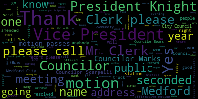
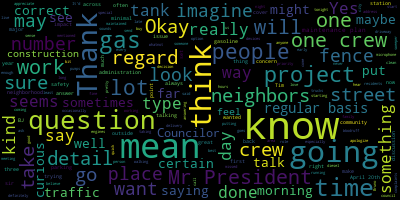
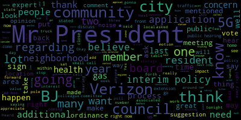
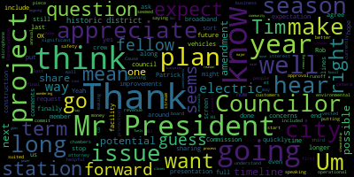
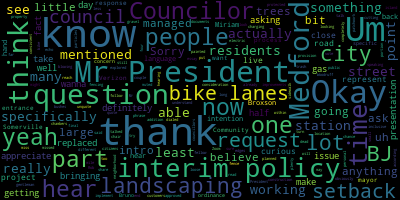

[Caraviello]: 15th regular meeting of the Medford City Council, April 13th, 2021. Mr. Clerk, please call the roll. Councilor Bears. Present.
[Vaughn]: Councilor Falco. Present. Vice President Knight. Councilor Marks. Present. Councilor Morell. Present. Councilor Scarpelli. Present. President Caraviello.
[Caraviello]: Present. Please rise and salute the flag.
[Falco]: I pledge allegiance to the flag of the United States of America and to the Republic for which it stands, one nation, under God, indivisible, with liberty and justice for all.
[Caraviello]: Pursuant to Governor Baker's March 12th, 2020 order, suspending certain provisions of the open meeting law, chapter 30A, section 18, and the Governor's March 15th, 2020 order, imposing strict limitation on the number of people that may gather in one place, this meeting of the Medford City Council will be conducted by a remote participation to the greatest extent possible. specific information and general guidelines for remote participation by members of the public and or parties with the right of requirement to attend this meeting can be found on the city of Medford website at www.medford.org. For this meeting, members of the public who wish to listen or watch the meeting may do so by accessing the meeting link contained herein. No in-person attendance of members of the public will be permitted, but every effort will be made to ensure that the public can adequately access the proceedings in real time via technological means. In the event that we're able to do so, despite best efforts, we will post on the city of Medford or community media website, an audio or video recording transcript, a rather comprehensive recording of the proceedings as soon as possible after the meeting.
[Marks]: Okay. Mr. President, if we could, Mr. President, I realized that we have been reading the governor's order since March of 2020. And I would ask that we send this to our city solicitor regarding language that states no in-person attendance of members of the public will be permitted. That is not, right now what we follow, Mr. President, as you know, we received from our local board of health, the approval of having in-person attendance. We follow all the local board of health guidelines, as well as the CDC guidelines. So I would ask that this be sent to our city solicitor for a potential update, Mr. President, on that language.
[Caraviello]: Thank you, Councilor Marks. Okay. Before we start, our Board of Health Director is not able to attend this evening, so she did send me a brief report. So since we've had, since 4-1, we've had 160 cases. The majority of those cases are 111 are under 40 years of old. As she states, this is not a time to let our guard down. Mask wearing and testing are still extremely important. All 16 year olds plus are eligible as of Monday and should preregister now on the state website. We were scheduled to do 50 homebound with the Johnson & Johnson vaccine this week, but they were put on hold due to the feds holding it for more investigation. We will be in touch with those people to reschedule as soon as possible. We look forward to seeing Marianne. Oh, excuse me. Our largest 46 cases are between the ages of 20 and 29. So it seems to be that the bulk of the cases are coming in from the younger people who are getting out and being a little homebound. So we'll have an update again next week. Thank you. All right. Hearings 2-1-3-0-1, City of Medford public hearing. A public hearing will be held by the Medford City Council via Zoom remote video conferencing on Tuesday evening, April 13th, 2021 at 7 o'clock p.m. on a petition from BJ's Social Club under the provisions of chapter 148, section 13 of the general laws of Massachusetts for a flammable storage license to
[Bears]: I think we lost the council chambers.
[Morell]: Mr. President. Sorry, the council chambers are muted. We can't hear, we missed part of the intro and now we can't hear anything.
[Caraviello]: The council chambers are muted.
[Morell]: Okay, we can hear now. We can hear now. We did, the people dialed in on Zoom did miss a large part of the intro.
[Caraviello]: Name and, excuse me, name and address of the record and... Pat, can you put the mic on? There we go.
[Vaughn]: Good evening, Mr. President and members of the council. For the record, my name is attorney Mark Vaughn with the law firm of Riemer Braunstein here tonight representing BJ's. It's okay for us to make a presentation?
[Caraviello]: I know, you are in favor? Yes, you are in favor of this. In favor is the applicant. Thank you, we're good. Is there anybody else in favor of this? Hearing and seeing none, we close this portion of the hearing. Is there anybody here in opposition to this? Anybody here in opposition? Okay, hold on. I see somebody here. Jessica Wall?
[Wall]: Hi, good evening members of the council. My name is Jessica Wall. I'm an attorney at Anderson and Krieger in Boston. I filed a comment letter on behalf of a group of Wellington residents. I'm happy to describe those concerns to the council tonight. And I believe that there are some members of the community who would also like to speak as well.
[Caraviello]: Thank you. Sorry. So you are not in favor of this?
[Wall]: Correct. We are opposed to the project.
[Caraviello]: Thank you. Anybody else not in favor? All right. Gentlemen. Would you like to make a presentation? Yes. Mr. President, would you like to be my president? Mr. Clerk, could you please mark our vice president and vice president? Thank you.
[Vaughn]: Good evening again, Mr. President, members of the council. For the record, attorney Mark Vaughn with the law firm of Riemer and Braunstein based in Burlington, and pleased to be before you in connection with the application representing BJ's Wholesale Club, the property at 278 Middlesex Avenue. So they have operated a club store location here for many, many years. It's actually the first store in the entire BJ's franchise. I'm not sure if you're aware of that, but their first store that they ever opened as a company. and they're very excited about the opportunity to provide a retail gas offering at this location. I'm sure you're all familiar with the location, but we have it up here. It's a large site. It's approximately nine acres bounded by the Felsway and Middlesex Avenue and a large expansive parking area that sets itself up quite well for the proposed use and that the proposed fuel offering can be provided in the far corner of the property. every year, this is Middlesex Avenue, this is Belway, this would be where the proposed fuel station would be, well removed from the adjacent residential neighborhood. It allows for the customers to be able to access the gas station without impacting operations in the main parking field as well. So the gas station use is allowed by right under the existing industrial zone. However, it did require major project special permit review by the Community Development Board, We did go through a rather lengthy review process with the Community Development Board where all issues pertaining to traffic, landscaping, lighting, public safety, and all related issues were looked at exhaustively. So as part of that special permit review process, I know all departments of the city were involved in reviewing and provided comments as well to the CDB. who ultimately voted to grant the special permit by unanimous vote. I think there was one abstention. As part of that process and review by the city departments, there were many improvements that were made to the design and conditions opposed accordingly. Austin Turner, who's with me, can walk through that in a moment if the board council would indulge us. we'd be making a variety of pedestrian safety, accessibility improvements, landscaping enhancements, sidewalk reconstruction, all features that were brought up in order to make some public benefit to that area. So we did submit today to the council a record of the copy of that CDB decision with some of that backup. So I know while the council did receive a favorable comment from the police department indicating no traffic impact anticipated. I would also note that the city's traffic engineer, Todd Blake, had reviewed the application as part of the CDB process and also indicated that all issues have been satisfactorily addressed. The project was also reviewed by the Conservation Commission. Technically speaking, we do have some wetland jurisdictional areas that are off locus, even though what we're proposing is all within existing paved surface over the property to the north, there are wetland resource areas. So we did trigger Conservation Commission review. that was reviewed thoroughly by that body as well. And notably, there's various drainage and stormwater upgrades that are being made here that resulted in them voting unanimously to approve it. So in a moment, I'd like to just introduce briefly Patrick Netriba, who was with BJ's real estate, and he can explain just I don't want to take any of his thunder away, but This is going to be something that they do at many of their clubs. It's an amenity for their customers. It would be limited to the members of BJ's. So it's a membership only type of operation, which helps on traffic. And again, it's to provide a convenience for their existing customer base. So I think it's important to note that there's not going to be any vehicular mechanic or vehicle service, anything like that that goes on here. It's strictly a retail petroleum sale. There wouldn't be a convenience store offering merchandise or things like that. There's a small kiosk that's on the property that is really just there with one attendant to be able to to transact business with someone if they are having difficulty operating or need to pay. So just one item I would like to mention before turning it over to Patrick. And I know it was referenced that there was a letter prepared by an attorney representing some folks in the area there. We are very familiar with the items that were raised in that correspondence. And honestly, these issues were raised with the Conservation Commission as well as the Community Development Board And I know as part of that review, I believe those issues were thoroughly reviewed and addressed as they all fall within the criteria of the Community Development Board's review of the special permit application. So we've tried to be very responsive throughout the process in terms of trying to address concerns and making sure that they were factored into the ultimate ultimate plan. But if I could, Mr. President, if I could maybe just ask Patrick Netriba to address the body, I would appreciate that. Thank you.
[Caraviello]: Thank you. Good evening. Name and address on the record, please.
[Netriba]: Sure, sure. No problem. My name is Patrick Netriba. I'm with BJ's Wholesale Club. Our address is 25 Research Drive in Westboro, Massachusetts. That's our home office. And I'm the director of real estate for BJ's. Thank you for your time. I really appreciate it. As Mark alluded to, Medford's a real special club for us. It's club number one. It's amazing. It's 37 years old. That's not too much younger than I am. But it started off in 1984 with an idea here in Medford. And it's something we're really proud of. We take a lot of pride in this community. It's our first one. There's a silver shovel in the home office, right? When you walk in and it says Medford, Massachusetts. So we value this club and we value our members as well. As I'm sure you're all aware, BJ's members pay a fee to become part of the club. I hope some of you are members, maybe you are, maybe you aren't. But part of that is a value proposition that we offer. We offer great prices on milk or diapers or anything else that you want to buy. and including at most of our clubs, gasoline fuel is a big part of what we do and our members clamor for it. Hundreds of members over the years, many of which who I'm sure Medford residents, but some who are not, I'm sure as well have asked for gasoline. Why don't we have gasoline in Medford? Why do I have to go to stone and why do I have to go to revere and good businesses? They listen to people, they listen to their customers, and that's why we're here before you tonight. because we want to do right by our members and keep servicing them. Because if we don't do that, we won't be in business for too long. So with that, I want to hand it off to Austin. He's going to give you a quick summary of the project. And thank you. Appreciate your time tonight.
[Caraviello]: Thank you. Good evening, name and address of the record, please.
[Torner]: Yes, sir. Good evening, Mr. President, members of the council, Austin Turner with Bowler. I am the civil engineer, land development consultant for the project. What I'd like to do just briefly is give you a high level view of the project, some of the improvements that have been made to the collaboration with your team, and then we can open it up to any questions, thoughts you might have. So Patrick and Mr. Vaughn gave a very good introduction. This particular club, The fueling station is, as Mark pointed out, located kind of in that north-east quadrant of the property, which is strategically located in terms of proximity or lack of proximity to the neighborhood and kind of up against that road. So it's kind of its own isolated thing. It's also located in the portion of the property, frankly, is- Mr. President?
[Caraviello]: Councilor Marks.
[Marks]: Is there any way the gentleman could maybe move up the sign and speak into the mic? Because I don't think people at home are going to be able to hear. at that distance. Thank you.
[Torner]: This portion of the property, frankly, is substantially underutilized. It was an existing parking lot that was never used. As Patrick mentioned, this has been in the works for some time. There's been a strong desire, request, and interest to establish this offering for members, and so here we are. We went through an exhaustive review process with the Conservation Commission, with the Community Development Board, where, frankly, this project evolved pretty substantially, and for the better, honestly, as a result of that feedback. A number of items have been incorporated into the original design, which are summarized here, and I'll walk you through that very quickly. The Middlesex Ave out in front are maintaining the access in here. The fueling facility has been arranged in such a manner to really promote efficiency. There are a number of different fueling facilities, use what's called the tandem arrangement where they're back to back. You've seen them in those quad packages, which they're not efficient because if one person takes the fuel position in front of you and the other one's open, you can't get around it. It creates stacking issues. This particular arrangement is set up where we have six islands and 12 fueling positions. So you can fuel on either side of the island, one way flow through that position where you would enter through the property here. You can come in and then filter through these positions here. and then out, take a left, and you come around. The traffic flow in that pattern was the subject of much discussion with the Community Development Board. This large landscape island that was added was at the direct request of the Community Development Board and through some collaborative efforts as part of the public hearing process. The reason it was included, they really wanted to reinforce this kind of counterclockwise position and not have vehicles who had exited the field position come back out coming through a full access driver that was located here. As a result of that, we converted this to an in only to promote that circulation pattern, put this island in so it pulled vehicles further away and down to that existing curb cut in there. That's a substantial improvement from a traffic flow perspective and something that we focused on quite a bit with the community development for. The other thing that's an important note here in terms of truck circulation, when a truck does enter off of Middlesex Avenue, There is a defined loading position that's been in place for 37 years at this facility. We are maintaining that. They come in here, there's signage, they come around the outer perimeter, and they go to the loading. That's staying. So a fueling truck that would come through here, it's gonna follow that same protocol. It's not gonna change anything about deliveries, how the trucks are routed to the property, anything access related to that regard. Staying on the access team, this driveway is quite wide. It's been that way forever since the inception of this property. Through our discussions with the CDB and the city's traffic consultant, this driveway became narrower. We narrowed that curb radius to the point where we can still accommodate emergency response vehicles and also delivery vehicles, but it's become narrower. That's served two purposes. It controls traffic better, and also we're upgrading the accessibility in there. New sidewalk, new ADA accessibility, new tip downs, and a crosswalk. They don't exist today. The sidewalk along our frontage is being reconstructed. Yeah, sure, I'm sorry. I didn't mean to block you out. And if the bald head is giving glare, then it's... No, all right. Let's see if I can get this mic. You're welcome. Also, in terms of access, On the Middlesex Corridor, and Sean Kelly from Vanossas here, if he can talk about this in additional detail if the council so desires, we have committed to, through feedback and the request of the city, as well as their traffic engineer, to working with MassDOT to implement bicycle lane striping along this corridor, nearly a mile of that. That's a substantial, substantial benefit, and something that was the subject of much discussion. It improves traffic flow along this corridor, but also adds bike lanes, which are in the city's master plan, and something that had been, the city had been, frankly, having trouble implementing because it's a pretty extensive undertaking. and didn't have the resources to do it, they saw this as an opportunity, and BJ's is agreeing to collaborate with the city and MassDOT to try and implement those improvements there. That's a pretty substantial upgrade, and it's a lot of work on BJ's behalf. The accessibility improvements on the Felsway, we're upgrading that as well. There's a crosswalk in there, striping, and sidewalk improvements in that immediate intersection that are also being upgraded as part of this project. Another item that was talked about was the lack of pedestrian accommodations to this facility. There really was none, despite the fact that there was sidewalk infrastructure along Middlesex Avenue. We're adding a sidewalk along the entire length of this property to the front door to allow people who may be in the community next to us, right in the general vicinity, to walk to the facility without having to drive. There was no sidewalk today. We incorporated that. That's part of our plans now. The landscaping here, particularly along Woodruff Avenue, wasn't doing so great. There was a large void in what was previously existing vegetation in that edge. This stretch along Woodruff Avenue, we're reinforcing that vegetation, new landscaping along that edge, and upgrading the fence to improve its condition. It had not aged very well. And then a number of different plantings inside the parking lot where there really were painted islands and things of that nature, that's being improved. That was also a request of the CDB. In terms of stormwater and other improvements, We have a modern stormwater system here and extensively reviewed both by the conservation and by CDB. It includes mechanical treatment. It includes all of the modernizations of the stormwater system that didn't exist or previously was running off and going into that resource area that was offsite. That's been extensively reviewed and is being incorporated as part of this project. We're adding nearly 5,000 square feet of additional landscaping along the frontage and interior, where it was essentially asphalt. That's pretty substantial in its own right. In terms of lighting, we do have new lighting on the property. It's modern, it's gonna be LED, it's gonna be shielded, it's gonna be cut off, and it's gonna be what you probably heard referred to as dark sky compliant, so it doesn't get that up glove. It's just forward-throwing, directional. The nice thing about LED is it's efficient, and you can really control how it gets illuminated on the property. The lighting design makes this part of the site appropriately lit, but not egregiously so. So you get even lighting levels, but it's not going to be halo or really, really bright. The fueling positions, we spent some extensive time with the Conservation Commission, put them on the outer edge of the property, keeping them out of that flow pattern and the internal circulation so the trucks aren't mingling with customers who are fueling. They're located right right here, and then a dedicated pull-off for a truck so we can maintain that navigable pattern around the property. Another item that we're incorporating here, and this was, again, some extensive discussion with CDB, we're implementing four electronic vehicle charging stations as part of this project. They're going to be located generally in the front of the facility to promote their use. That was a big initiative that was discussed. It took some time. That was part of the reason we were working through the CDB process. We had to get some commitments from folks to come here and join the property and work for that. But we're committed to providing those electronic vehicle charging stations. And then just in terms of this whole package, as I'd mentioned, I think it's important to just reinforce this process that we went through locally was incredibly valuable. The team that you have in the city spent a lot of time with us collaborating on this particular design. All the feedback we received, all those number of hearings that we went through made this project substantially improved. It's grown and evolved for the better. It was a very valuable process. I hope that the council sees that as well in terms of the City Council or the Community Development Board worked extensively with us to generate this plan, and obviously by way of their unanimous vote, thought that we had done what they asked of us and listened to their feedback, incorporated essentially everything that they asked for. It took a while, it was a lot of work, but I think, frankly, the Board should be commended for spending a time in that commitment with us, because I know it was a lot of time and effort on their behalf. Some of it went to very, very late in the evening. With that, oh, I apologize. One thing I want to touch on too, the fueling system, which is obviously the subject of this discussion, is a brand new modernized fueling system. It has all of the current modernizations, protocols, safety mechanisms, all of the things that you'd expect from a modern fueling system is incorporated into this project. Jim Stewart is here tonight if you have specific questions on the technology and how the operation of that he'd be happy to answer any of those questions for you. He's a wicked smart fuel guy. So ask him all the things you need to feel comfortable about it. And I'm sure he's happy to answer those questions. So I've talked a lot with that. I'd be happy to answer any questions or at your discretion.
[Bears]: Mr. President, could we hear from attorney wall before we go into questions?
[Caraviello]: No, excuse me.
[Morell]: if this this is the council's uh portion of the time to ask questions and the public will get a chance after after the council's essay questions okay she was one of the people speaking against yeah uh councilor thank you mr president um yeah i just have a few questions um if the gentleman could share a little bit more about the landscaping improvements i know we have you know you can look at different parts of the city where they have quote-unquote landscaping, which is just a couple of dead bushes and an island. So if we could talk more specifically to what that actually might be.
[Torner]: I'd be happy to, Mr. President. So what we've done in the very front of the property, the parking lot essentially went right up against the sidewalk almost to the boundary. It's an asphalt parking lot. We've pulled the development further interior to the property. we've incorporated about 3,000 square feet of landscaping immediately up against Middlesex Avenue. It includes a number of street trees. It includes a number of ground cover plantings in there and a lawn area. The ground cover plantings, we selected species at the request of the Conservation Commission. and they are buffer zone planting. So there's different species in there to help promote that buffer zone. So we worked with the commission to pick those specific species in there to help promote that buffer zone and enhance the buffer zone that really wasn't anything but a parking lot previously. As you work interior to the property, again, that large landscape island in the center of the property provided an immediate vehicular control. but equally as important afforded us the opportunity to incorporate four shade trees where none existed, a number of different ground plantings in there as well. And we've incorporated ground plantings and shade trees along the interior of the property where the opportunity afforded us to do that, including up against the building where there are none. And most importantly, along Woodruff Avenue, shade trees there, and then a number of screening plantings to enhance that buffer that had long since disappeared. I hope that answers the question.
[SPEAKER_21]: Yes, thank you.
[Morell]: How many street trees do you know?
[Torner]: Hold that thought. 14, as I
[Morell]: Okay, and inclusive, so I would understand the ones on the property would obviously be managed or by BJ's landscaping. For the street trees, would those also be managed by BJ's?
[Torner]: Yes, ma'am, that's correct.
[Morell]: Okay, thank you. And then I believe I read in the documents, the bike lanes, are they protected bike lanes or they are just painted bike lanes?
[Torner]: they're going to be painted bike lanes. That's what we've been talking about. So they're not going to be some physical barrier, if you will, between them, they're going to be striped.
[Morell]: Okay. And you mentioned this just may have been a turn of phrase, but you said you're going to try and implement the bike lanes. Is that, you know, that's definitely a provision that you were working on, or this is something that's still being explored.
[Torner]: So where, what was requested at the community development board, which we obviously agreed to was to work with MassDOT to implement this program. We've had initial discussions with MassDOT. Part of that process is continuing to evolve as these improvements are designed and coordinated. But what we've committed to is working with MassDOT to implement these improvements. Obviously, that's subject to their review and their technical review of the drawings, but that's a conversation that's happening and it's active and it's ongoing, and we haven't heard anything to the contrary yet.
[Morell]: Okay, and just one final question. I wanna make sure my other Councilors have plenty of time I know you mentioned what your customers are looking for as far as getting their gas through BJ's, but has there been any consideration to the fact that there are no less than four gas stations within a half a mile of this location already?
[Torner]: Certainly, yeah, and I don't think, you know, I'm not a BJ's employee. Patrick can speak to it if he wants to, but in terms of We're not looking at it as being another gas station amongst others. It's an offering for BJ's members who have asked for this thing. We're looking at it as a product and an offering for BJ's club members. Consideration has been given to it, of course. And frankly, BJ's is making a very, very big financial commitment to implement this facility. They wouldn't be making it if they didn't think it was additive to both their facility and the community.
[Falco]: Okay, thank you.
[Torner]: You're welcome.
[Falco]: Thank you, Mr. President. If you could, and I apologize, before I couldn't get a good view, but could you just show me what the flow would be like going into the driveway for someone that wants to get gas? Yes, sir, of course.
[Torner]: So if you'd come in off Middlesex, enter the property here, you'd have this entrance only, right here, this is the in only driveway, you can't exit the driveway. You'd make this move, and then you'd enter, you queue through the fueling position, and then you'd make a left once you were done, come all the way out over here, exit and then you'd come out, you could exit that way.
[Falco]: You don't have any concerns with queuing that way? I mean, to me, it seems like you could kind of get into a bit of a log jam once you take that right to get in if you have multiple cars. I'm not questioning, but just so I'm clear, when you say that way, you're referring to the entrance? Correct. So when you go into the area where you're going to get gas, so you come into the driveway, you take that right. I mean, there are a lot of pumps, which is great, but if you have, I mean, sometimes get a lot of customers, which I guess would be a good thing. I mean, I would imagine you'd get pretty jammed in there, no? No, no, sir. I mean, it's a great question.
[Torner]: And it's one that we spend a lot of time talking about. So I'm happy to answer it. This distance that you see in here, that's kind of that entrance queue, right? We don't expect that that's going to be stacked up. There's sufficient room in there where you can have a vehicle in the pump in the queue, have two vehicles behind it. and not have queuing spilling out into that driveway. So your concern, I understand and appreciate, is backing up this lane so you're creating this traffic jam where people are not coming in and out. We set this up so that you can accommodate a number of vehicles in here. We don't expect that volume to be there at a given time. We have spent a lot of time analyzing it. BJ's operations look at these. Part of the reason we have this fueling system set up is it processes vehicles very efficiently through that queue. And it doesn't create that tandemized issue where you have two pumps that are stacked up and one's in the vehicles in front. You can't get to the one in front of it because you're waiting for them to go. And then the reason we have the 12 fueling positions, we don't expect to be using those all the time, but it creates that efficient processing. So in the event you have 12 cars there, you can push them through very quickly and get them in and out. And you don't expect, and you don't anticipate at all that those vehicles are going to queue back up into the engine driver.
[Falco]: Do you have that same kind of set up at your other locations? Yes, sir.
[Torner]: You do? Yes, sir. And you find it to be pretty successful? Absolutely. We wouldn't do it if you, you know, not to be facetious, but we wouldn't do it if it didn't work that way, yeah. Thank you.
[Falco]: If I may, Mr. President, do we have anyone on the line from the administration that's answering questions?
[Caraviello]: Alicia? Alicia? Yes, sir.
[Hunt]: staff, both the Conservation Commission and Community Development Board, so I'm able to speak to those hearings.
[Falco]: Alicia, my question will be, you know, when you take a look at the gas tanks that have, you know, proposed for BJs, how do they compare to the gas tanks across the street? Are they same size, same number of tanks? I'm just kind of curious.
[Hunt]: actually, you're the first person to ask this question, and we've never had a conversation with the owner across the street about what he has installed.
[Falco]: Do we have anything on file that we can look at?
[Hunt]: I would have no idea. We would have to check with the building department to see if they do.
[Falco]: To me, I'm curious about that. That's just, you know, I mean, to me, there's a lot of I'm not a gasoline expert. I mean, but I know there's a lot of gas in that area. I mean, you're talking, what, I think between the three tanks, there are like 60,000 gallons worth of gas?
[Torner]: I think it's 64,000.
[Falco]: And then I would imagine, if I'm correct, the gas station across the street is pretty sizable as well. I don't know what they have, but I would imagine it might be something similar. So I'm just curious as to what, you know, that gas station has across the street. And I don't know, but I mean, I'm not sure what are the gas stations in the community. I'm not sure how they set up, but I mean, that's, to me, that's just kind of curious about that. With regard to gasoline, so I have questions regarding gasoline delivery. How often will this be, will you be getting gas deliveries? Is that something that you would be able to answer?
[Netriba]: can answer that question for you, Councilman. We'll expect to take a truck here approximately once per day to service the fueling station.
[Falco]: One time per day to fill up? Approximately, yes. And is that coming at a certain time?
[Netriba]: No, the deliveries are scheduled on demand and controlled via computer based on the demand for gasoline. So we monitor that on demand based on our systems. And if we're low, we'll take a delivery at that point and schedule it. to work with the business operation to avoid peak travel times and what have you.
[Falco]: And if it's not at a certain time, is it going to be between certain hours? Will it be coming late at night or early in the morning?
[Netriba]: It could be scheduled at any time, but we try not to schedule it during our peak hours, you know, Saturday morning when people are shopping or Sunday for that matter. We do schedule sometimes in the evening or an overnight if possible.
[Falco]: So is there, So one of my concerns would be, and we haven't heard from the neighbors yet. I mean, could there be a gas delivery at five in the morning? Is that something that could happen?
[Netriba]: It could, yeah, yeah. And it's a completely quiet operation at that rate. The truck would pull up and shut his engine off. And then the fuel is dispensed into the tanks via gravity. There's no pump. There's no whirring of an engine or a motor or what have you. It flows via a pipe or tube, if you will, into the tanks via gravity. You'd be hard pressed to hear it. You know.
[Falco]: Are these large tanker trucks that are delivering the fuel?
[Netriba]: Yes. In Massachusetts, the state regulation, Jim will correct me, 12,000 gallons, I believe is correct? Up to 12,000 gallons, yeah, which is industry standard.
[Falco]: And I'm just thinking with regard to the neighbors, you know, especially if you're going late at night, early in the morning, do these have diesel engines, these trucks? You know, diesel engines are usually louder, so.
[Netriba]: Yeah, just like any other truck, they have a diesel engine, but when they pull up, they turn off their engine. So there's no idling while the fuel tanker is dispensing its fuel from the tank of the truck into the tank in the ground.
[Falco]: Does that make sense? That makes sense. I'm just trying to think of the impact it's going to have on the neighborhood. And I know, for me, if I lived in the neighborhood, I would have questions like this. how is it going to impact the residents? That's so, you know, quality of life issue, noise, traffic, you know, these are all things that, you know, I have questions about. When I look at a project like that, that's why I ask these types of questions. It does have an impact. As minimal as you may think it seems, I'm not saying that you think it's minimal. Some people might think it's minimal, but if you live in the neighborhood, it's a concern. So that's why I'm asking these questions. Is there a, so as far as the safety devices that are set up, I mean, I would imagine there's all kinds of safety devices within the pumps and whatnot.
[Netriba]: Yeah, it's a state-of-the-art system. We buy the absolute best system that we can because it's simply not worth taking any risk when it comes to fuel. And I can look at all of you and say that with conviction, that that's what we do because it just isn't worth the risk to be cheap on your piping, your tanks, your systems, your people, any of it.
[Falco]: We buy the best that money can buy. With regard to the parking lot and the new plantings, which I think that's the vast improvement. One of the complaints I received is that at times the lot can be dirty, trash. So is there a maintenance plan for that parking lot? Put it this way. You're just saying that I think the plant things on Woodruff and the Woodruff side, they were in tough shape. So to me, when I hear that, that means that maybe they haven't been maintained. They have, you know, so therefore, you know, BJ's maybe hasn't been on the ball with regards to the maintenance. I mean, is there a maintenance plan in place where this is going to be, you know, maintained on a regular basis, cleaned on a regular basis. You know, if you're putting down mulch yearly, can you talk a little bit about that?
[Netriba]: Sure, yeah. This club receives extra maintenance and has for quite some time. I think when we're talking about some of the plantings were in rough shape, particularly on Woodruff Avenue, maybe you've driven there, but some of the trees on the public side, not on BJ's property, have died over the years. I don't know whether it's salt or whatever happens to be. Right. Right.
[Bears]: OK. We can't hear if people aren't speaking into the microphone.
[Netriba]: I can illustrate what Austin was saying. Some of the trees along this area we were discussing before that the vegetation was in rough shape. And there was a utility project that occurred in this area on wood, where some of the roots for the trees had been cut as a result of that utility work. And I think that's the reason why some of those trees have died. You guys can speak to that perhaps a little bit more, but our efforts to bolster the landscaping here are evident out of plan. We want to screen the neighbors as much as we can. We understand, I understand, these people live here and I get that. I totally get that. This is their neighborhood. This is their front yard. And we have to be sensitive to that, which is why we've done the best that we can to push our facility to the far end of the lot, to screen as much as we can, to make this the best that we can for them, because it's... One information, Councilor Scott Belli. As we're asking for this tonight, where has BJ's been for the past few years with those neighbors? I'm sure you've known that the fencing and those lines, those homes that have been abutted, there's been some concerns. So I think that's what Councilor Falco is leading to. It was nice. I started working there. I was one of the first people that worked there when I was a kid. So I understand the energy, and I loved your speech at the beginning, but as we moved on and BJ's grew, we kind of forgot about those neighbors. So we're just, I think that's one of the things I'm concerned too, because if you look at that fence that goes along that area, if those neighbors live, you know, it was deplorable. And then the mess that goes there, And, you know, I, I, I didn't see much until, you know, maybe this project's come to light, but I just hate to see, as we move forward with this and then this is forgotten. So I just, I think we need more assurance of what type of plan, if I, if Casa Falcos leading to the way you're going with the maintenance, because we didn't see it. We haven't seen in a long time. Thank you, Councilor Falco. I apologize. No worries. I can understand that. Listen, we've been there for 37 years and we're not perfect.
[SPEAKER_21]: Okay.
[Netriba]: Yeah. And I won't stand up here and tell you that we are perfect. I'm sure we've made mistakes, but we do our best and our maintenance manager does his best. Even as recently as February, we had a maintenance project and I know that he, Sean, went around and put flyers in everyone's mailbox to try to try to do our best to notify folks of what we're doing, when we're doing it, and why we have to do it. So that being said, this club does receive an enhanced maintenance program. I can get to some more details on that if you'd like. I'm happy to provide that. And we're committed to maintaining that standard and that level. And I'm glad that you've noticed it's gotten better because we want to make it better. And I understand that in years past, perhaps we haven't met that standard and haven't lived up to that. And I can't change that, but what I can do looking forward for you and to say to you that we will do better and we will follow what we say we do here and now.
[Falco]: So do you have a maintenance plan? Is there something in writing a maintenance plan that BJ's has for this parking lot?
[Netriba]: Yes, we do.
[Falco]: We have an internal document. Yes. Okay. Is that something you can send to us? It'd be nice to know. I mean, like I said before, that's one of the complaints I get. I know when I'm walking through there, sometimes, you know, it looks like, you know, I'm not sure how often you have a street sweeper come through. But you mentioned, this is, I mean, for some people, this is their front yard. And they're literally looking at this all the time. So therefore, you know what, it should be clean all the time. That's the way I look
[Netriba]: summarize what we do and when we do it so that you can review that. Fair enough? Thank you. Good. I apologize. Thank you. Councilor Bears.
[Bears]: Thank you, Mr. President. I want to thank you for your presentation. Thank the CD board and the Conservation Commission members for what seemed to be some significant improvements since the start of the project. I think my questions may be better suited for Patrick from BJ's.
[Netriba]: Sorry to walk away on you there.
[Bears]: Hi, Patrick. My first question is, how long do you expect this station to be operational? You know, 10 years, 20 years?
[Netriba]: The expected life term of the facility, I would anticipate it's at least 15 years, probably longer, something like that. I think that's fair to say.
[Bears]: Um, and do you have an expectation of the annual revenue that you're going to be gaining from this facility?
[Netriba]: I don't know. I'm sorry.
[Bears]: Um, I think that would be helpful for us to understand as well. Cause you know, I appreciate what you're saying about your customers, but I think you as a, as a business also have a vested interest. You wouldn't be putting this forward if it wasn't going to, to make you money. Um, the third piece of this that I want to ask about is, you know, If this project doesn't finally get final approval, would you commit to making some of the improvements around safety and environmental protection that are included in this plan?
[Netriba]: I'm sorry, I want to make sure I understand your question properly. You're saying if you do not approve the project, will I still provide the mitigation?
[Bears]: Or some of it. I mean, it seems like currently we have runoff going into a stream, et cetera.
[Netriba]: That's something that we could discuss, but we wouldn't be doing any work out on the parking lot if we weren't building the gas station. So I'm not sure if I completely follow you.
[Bears]: No, I'm just wondering. I mean, it just, you know, it kind of goes to, I appreciate the comments from my fellow Councilors, Scarpelli and Falco, you know, about stewardship and, you know, being a member of the community, it seems like there are some ongoing issues. And then finally, you know, If, I guess, say there's a 15 year lifespan, what would the process be for removing the facility if it eventually closes?
[Netriba]: Sure. No, that's a fair question. We will remove it when it reaches its end of its useful life or when we decide that it's no longer viable, one of those two things. And the facility will be decommissioned for state regulation and NFPA as far as the tanks and the underground storage piping lines. and everything that has to be removed in the facility will be removed from the area. You wouldn't know it was there at that point.
[Bears]: Got it, I appreciate that. And the reason I ask is just with the commitments from major automakers to move to electric vehicles and the expectation that fossil fuels are no longer going to be the main way that we power transportation going forward. To me, this seems like a little bit of a short-term plan Um, and not necessarily where we're going in the long term to be installing a gas station at this late stage in, in our energy transition. Um, so that's why I bring that up, you know, in 15 years. And is that, does do industry trends reflect what you expect the life of the station to be is 15 years based on the fact that, uh, vehicles are transitioning to electric.
[Netriba]: You know, I wish I could predict the future, but as you'll note in our application and filing and plans, we actually have car chargers at this location because we see that as a potential and something that our members have asked for as well. So we certainly want to cater and service to them with an eye to the present as well as one to the future.
[Bears]: Do you expect that that could be a potential future outcome as well, a conversion to some sort of electric charging station?
[Netriba]: I would say that all options are on the table, whether it be electric, hydrogen, or some kind of fuel cell. I think that those kind of things are certainly on the horizon.
[Bears]: Okay. Well, I appreciate the answer. I share some of the concerns of my fellow Councilors, as well as some of these long-term concerns, and I would like to hear from the neighbors as well. Thank you.
[Marks]: Councilor Knox. Thank you, Mr. President. I want to thank my colleagues for their comments, and I want to thank BJ's for being present tonight. What I did hear at the outset, Mr. President, was that BJ's values their club and they value their members. What I did not hear was that BJ's values the neighborhood. And it may be because I live a couple of blocks over, Mr. President, that I could tell you firsthand the number of emails and phone calls I've received over the past many years regarding BJs. And it's great to say that this is their first club, this is their flagship store, it receives extra maintenance. Mr. President, all you have to do is open your eyes and see that none of that is true. All you have to do is go along Woodruff Ave and see the many breaks in the fence, year after year after year. and the debris from their parking lot blows out into the neighborhoods. It was just about three days ago. So if anyone went by there and looked at Woodruff Ave and said, what a nice clean area it is, it was my call to DPW, which happens two or three times a year, Mr. President, to Steve Penaglia, the head of our highway, that got that area once again cleaned up. And it was our DPW that went out there that would cut down the debris and so forth. Yes, BJ's has done some improvements after many, many, many calls. And I've personally made them to the store managers over and over again, the district managers and so forth. And they will eventually make some improvements, Mr. President. But it's clear to me, if you look at the lot, you look at the debris, you look at the fact that it is not a pedestrian-friendly business. Anyone right now that has to walk to BJ's, so if you're an area resident or neighbor and you wanna walk there, you're taking your life in your hands going through their lot. That's how dangerous it is, Mr. President. And that's why the Community Development Board made the recommendations they did, Mr. President, regarding circulation. It wasn't just for vehicular traffic, it was for pedestrians as well. That's how dangerous it is, Mr. President. I remember getting the calls over and over again, Mr. President, because the sweeping that they do in their parking lot, two, three in the morning, the sweeper would be out there. You can imagine the noise and the echoing of the noise in the neighborhood. And I can't tell you how many times, how many calls I had to put out, Mr. President, in order to get BJs to act. And then they stated they did something, and within three weeks, it's back again. The noise. Idling trucks overnight, Mr. President, with the refrigerators, parked in the lot for hours and hours and hours, idling trucks. It wasn't until we brought BJ over and over again and asked them, what can they do about it? I believe they started locking their lot. I don't know if they put a chain in the front back. They started locking their lot, Mr. President. But still, at night, that lot remains open on many occasions. Drag racing. You might say, how can you drag race on the back of the lot? They start from the beginning of the lot on the Fellsway, Mr. President, where that little stretch of road runs along Woodruff into the parking lot, and they drag race inside there at night. These aren't made up stories. These are what the neighbors have to put up with, Mr. President. You know, BJ's has not been a good neighbor, in my opinion. I've lived in the area 30 years. They have not been a good neighbor. And I don't believe they value the neighborhood, Mr. President. If this is their flagship store, shame on them. I'd hate to see what the other stores look like. You know, they mentioned about substantial improvement to the circulation, to the landscaping, to the lighting on their lot. They haven't mentioned the concerns of the neighborhood, Mr. President. We heard that this new station is a great distance away from the homes. I challenge anyone to take a walk down there tonight, and we'll see what this great distance is from the homes. We'll see, Mr. President, the 64,000 gallons of flammable gas that's going to be in very close proximity to homes in that area. and ask if you would like to live that close in that area, or anyone from BJs, if they'd like to live that close. This is a secondary use for BJs. And it's great that they wanna take care of their members, that's great. What else does the membership want? Where else can we put that lot? It's a big lot. How else can we accommodate the membership of BJs and disregard the neighborhood? And that's exactly what we're doing here, Mr. President. If I'm not mistaken, BJ's approached the city council some many years ago for a license for gas storage on that property, and they were denied. For many of the same reasons you're hearing here tonight, Mr. President. You know, we heard about trucking, one truck a day. That's for the gas. That doesn't include their other operations. how many other trucks are coming in, 18 wheelers, and so forth. Operational noise. They're not putting this gas station for no reason. As the gentleman stated, I believe it's near Woburn BJ's. People would like to have one closer. So we'll divert a lot of that traffic to Woburn, into Middlesex Ave, into the Felsway, into our neighborhood, Mr. President. additional path trips. It was stated. I happened to have attended the Conservation Commission hearing on January 15th, and I spoke and represented what I believe the neighborhood concerns, and they did a good job as well. I also spoke at the September 16th Community Development Board meeting. And let's not forget, Mr. President, we can thank the Community Development Board, the Conservation Commission, But guess who represents the neighbors in the neighborhood? It's this Method City Council. And we're the ones, Mr. President, that feel the complaints, that hear the concerns. So, Mr. President, what I would ask is for BJ's tonight to present to us what the lighting impacts associated for this proposal on the residents. What are the direct lighting impacts on the residents? I'd like to hear from them tonight, Mr. President.
[SPEAKER_08]: Okay, you wanna answer that? On the lighting?
[Netriba]: before Austin gets into the plighting, Councilor Marks, I just wanted to address some of your concerns because we do hear you. And I know you're a resident and I know you've worked with us over many years. And like I said, we've made mistakes and I understand that and I get it. I can't erase those things in the past, but what I can do is tell you here now that we will agree and commit to a certain level to make it better for you and for your neighbors, as I've outlined here, but I wanted to, to not rebut your statements, but to acknowledge them, because I know that yours are heartfelt and our sympathies are with you on that to make it better. So, okay. With that, Austin, we'll answer your question on the lighting.
[Marks]: I appreciate your comment.
[Torner]: Again, Austin Turner with Polar. So do you have a question about the lighting? So this portion of the property, the fueling station on. We have a select handful of pole-mounted lights, like I mentioned at the opening in my summary. They are LED lights. They are shielded, and the LED allows us to directionally control where the illumination is going to go, as opposed to the old metal halide ones, which are just basically a halo of lighting. The canopy has lighting, as you'd expect, for your customary fueling position, similar to the one across the street, except the lighting under here, again, LED and directional, so it's immediately downward. The lighting levels that we are calculating in front of the plan, which, again, would be impossible to see on the plan that we have provided, show customary and appropriate lighting levels underneath the canopy itself. You can't see it here. They transition out very, very quickly. and I begin to go to parking lot level lighting very, very quickly. We have lights, if you can follow my hand, we have individual pole-mounted lights in this corner, a pole-mounted light there behind the canopy, a new pole-mounted light in that island to illuminate the driveway. The lighting levels transition very, very quickly down to, you know, less than a couple of tenths. Foot candles, as it's measured and calculated on the plan. So in terms of impact to the neighborhood, It's no different, in fact, better than what the parking lot lighting is there today, where there's a handful of very, very tall quads or two lights on a tall pole that just don't have any direction or shielding, whereas we have that now. And it's tucked kind of internally, and all the lights are forward throw and face interior, the shield isn't cut off. So in terms of your question directly about impacts to the neighborhood, I'd suggest this plan is a substantial improvement over the lighting condition that exists out there. It's a much more modernized and directional lighting program. Right. What about signage? So signage, the existing sign that's on that corner that folks are familiar with now, that sign is going to remain. And it just gets rebranded to acknowledge the fact that there's a cast offering here today, or will be.
[Marks]: So you're going to add an internally illuminated sign?
[Torner]: I believe the sign is internally illuminated today.
[Marks]: But you're going to add an additional sign? No, sir.
[Torner]: No, sir. The sign itself changes. We're just taking the panel out, rebranding the sign so that it's reflective of the current BJ's gas branding.
[Marks]: So you're going to have the one BJ sign, and then you're going to replace it with a BJ and gas sign in one sign?
[Torner]: The structure itself remains the same. I'm over-explaining this, but just so we're all clear. I'm sorry. You're just putting a new picture in the picture. Putting a new picture in the picture. That's probably well articulated.
[Marks]: And what about, you're going to have a canopy around the station?
[Torner]: Yes, sir. There is a covered canopy over the station.
[Marks]: And is any illumination associated with that canopy?
[Torner]: Yes, sir. That's what I was describing. There are lights underneath the canopy that throw light downward onto the fueling positions.
[Marks]: What about on the exterior of the canopy? Anything that's lit up on the exterior?
[Torner]: There's branding on the sign. There's on the two corners here that show in the BJ's gas canopy. Those are not, they're not illuminated. I think there may be internal illumination.
[Netriba]: BJ's gas Councilor Marks on a facade of the canopy. We haven't yet determined which facade it would be, but I understand your concern in terms of having it facing the neighbors in that situation. And we're happy to not have that face the neighbors. Okay.
[Marks]: So what about, okay, that's, well, that's, additional sign. It's additional lighting that wasn't mentioned. I just want to lay everything on the table. I understand. So there's no surprises. And I want to be what about gas prices? Are you not going to say what your prices are?
[Netriba]: No, we have to display the price per state law, sir. So we will put we will apply for a permit, whatever process there is in town to modify our existing pylon sign in Austin. Help me out. Where is it exactly right there? Thank you. To have our BJ's panel be replaced with a smaller version of BJ's Wholesale Pub Panel, followed by BJ's Gas, and then LED reader boards that will display the pricing, similar to what you see across the street with our neighbors, if you are all familiar with that.
[Marks]: Right, so that's not what we just heard from this gentleman. He said they were replacing the existing sign within the frame of that sign. That's right. And I'm sure you can't fit your pricing in there as well. Yes, we can. So you're gonna take that existing sign, you're gonna have the BJ's logo, you're gonna have the new station saying gas or whatever it is, and then you're gonna have your illuminated prices for your regular unleaded, high test unleaded, and so forth. That's all gonna fit in the same sign.
[Netriba]: That's correct, yes.
[Marks]: And you're not gonna expand the square footage?
[Netriba]: I don't believe we've submitted that information, yeah. There's no intent to change the surface. It's the picture in the frame. The frame inside is not changed.
[Marks]: Okay. Okay. In regards to the emissions of odor from the gas, how are you addressing that?
[Netriba]: There will be no emissions from the station. I can have our petroleum engineer speak to that in more detail if you'd like, but Modern cars have vapor recovery systems, as does the tanker, which dispenses the fuel to suck the fumes from the space where fuel is being dispensed. So there's little, if any, vapors that emit because of those two systems, which are, Jim, help me out, state requirement, right? State requirement. Stage two vapor recovery? Stage one, thank you.
[Marks]: All right. So what happens when someone overfills it leaks onto the ground. Are there any vapors that are emitted from that?
[Netriba]: Of course there are, sir. I wouldn't tell you that there aren't spills at gas stations, but we have a comprehensive... How often does that happen?
[Marks]: I'll be honest with you, it happens with me all the time.
[Netriba]: Does it?
[Marks]: All the time. I try not to, but it happens.
[Netriba]: I understand your position. I couldn't tell you exactly how many times it happens at our stations, sir, but I can tell you that we have a comprehensive plan, a spill management plan that I'm also happy to submit. as well that shows how we handle that, what we do, and how we contain a spill, whether it be a large one or a small one, it's just different classifications. So we've tried to think of everything as much as we can.
[Marks]: Is this self-serve or full-serve or both? Self-serve. Self-serve. So you will not have any type of attendant on that property?
[Netriba]: That is not correct. We will have an attendant who will man the kiosk, which is this box here in the center, sir. And that person will switch on or engage the pumps once they've determined that a patron or a member would like to purchase fuel. And you plan on selling anything within that little kiosk that this attendant will be there? The only thing we sell in the gas station is diesel, regular gasoline, high test gasoline, and memberships. If someone wants to renew their membership or buy a membership because they don't have one, that's also possible out of the kiosk.
[Marks]: And is this only available to BJ's members or can anyone from the public use that?
[Netriba]: No, sir. Members only. So this is a members only gas station? It is a members only gas station. As I mentioned in my initial speech to you all, it's a benefit for our members and it adds value to our members. So yes.
[Marks]: Right. So why does a company like Stop and Shop provide a discount for their Stop and Shop customers, but also allow you to purchase gas there as well with no discount? just so you don't stop and shop. And yours is just an exclusive. So it's only for BJs. So if I'm driving there and I'm running out of gas, I can't use your gas.
[Netriba]: You would have to purchase a membership. That's correct.
[Marks]: And how does that benefit the neighborhood and the community?
[Netriba]: Oh, folks are members. We certainly hope they would come frequent us. As we know that there are lots of folks in Medford who are members.
[Marks]: And those of us that are not members, we're not welcome. We want to make you a member, sir.
[Netriba]: Frank, we're not welcome. I wouldn't say that. No, you're always welcome. And we hope that you'll see the value that we provide to the community, as many people have seen.
[Marks]: I see the value if I'm a member. I don't see a value if I'm not a member. And that's, I think, something that your corporate office should really look into. So regarding the- Okay, Mr., I'm sorry.
[Netriba]: One other community benefit, if you'd like to speak to them specifically, is that the station can operate 24-7, 365, in terms of an emergency situation. So if we were to have another super storm, Sandy, or Hurricane Irene, or something like that, our station has generated capacity to be able to run and fuel your fire trucks and fuel your emergency responders. And we've done that elsewhere in New Jersey. I can show you the photos of it. And that's a significant benefit that those first responders were happy to have. And of course, this community would also benefit from it, as do all of the communities that we serve. So I didn't mean to interrupt. Do we have a membership requirement in that circumstance? That's a very funny question, sir. We'll waive that then. We'll waive it that day. I'm sorry to count so much. Please continue.
[Marks]: No, that's all right. During the testimony at one of the public hearings, an outside expert came in regarding the report for traffic engineering. And they mentioned in their report that they predicted the traffic impacts have been underestimated by your traffic expert.
[Netriba]: Can you speak to that? I have our traffic engineer who I'm happy to have address those concerns, but they were all addressed thoroughly to the satisfaction of the board. But if you'd like, I could have him come up and speak about those things.
[Marks]: Well, I'd like to hear, you know, I realized there's two experts and one saying one thing, one saying another thing.
[Netriba]: I'm not a traffic engineer, sir, nor do I pretend to be one, so I'm happy to have Sean come up and give you a brief summary of the Community Development Board's findings, the mitigation, and it was all done to the satisfaction of the city's traffic engineer. Sean, you're up.
[Kelly]: Thank you, Patrick. Good evening.
[Caraviello]: Name and address of the record, please.
[Kelly]: Good evening, Mr. President and members of the Council. Sean Kelly with Manassas Associates of Traffic Engineers in the project. As was pointed out, we went through a lengthy review of our traffic impact assessment during the community development board process. We worked with the city traffic engineer, Todd Blake, and we conducted what we feel was a very significant comprehensive study. We looked at over 11 intersections in and around the site in terms of traffic operations, how they are today, what they'll be in the future, the economy for growth and traffic, both associated with the project as well as independent of the project. We looked at safety characteristics. We looked at the traffic generation for the project, what that impact was. And I think the point of concern that was raised by the opponent, the gas station across the street, who they were representing at the time, was that we've relied on some industry data published by the Institute of Transportation Engineers. And the ITE provides data for a number of land use codes, including gas station service station. Their concern was that because it was a BJ's facility, because there's a discounted gas, that that data may not be valid. And in fact, it might underestimate the number of trips. We felt that, quite frankly, there's also another argument that that data could actually overstate the trips in the sense that the data that was collected to formulate those equations and rates, including gas stations that sold cigarettes, that sold milk, that sold lottery, that sold the newspaper in the morning, that had the reason you would stop there. Some of them had a service garage where you could go and get your oil changed or your inspection sticker done. And we don't provide any of that. All we sell here, as was pointed out, is these gasoline products and then also memberships if you need a membership to purchase the gasoline. We recognize the concern and we certainly wanted to address it. And again, this was a concern raised by the opposition, not by the city. So what we did is we went out and counted an actual operational B-Days facility in Redding. We felt this was a, I'm sorry, Stoneham. This was a similar site. It was located approximate to a residential area. Demographics were similar. And what the data showed was that the ITE data that we had utilized in the morning actually overstated the traffic. It was about double what we saw in Stoneham. In the evening, we were almost dead on. I believe that we had projected about 85 customers, and the Stoneham data showed 87 customers. So we were right in the money. The only instance where the actual empirical data was a little bit higher was on a Saturday, where we had about 50 additional customers, about a customer a minute. We went through and did an exhaustive recalculation of all the impacts on that Saturday. And what we found was that, quite frankly, even with that additional traffic, once you disperse across the hour and disperse different intersections, it didn't change the findings of our study. But one of the, I think the most important things that came out of that whole exercise with respect to the traffic generation and what the impacts were is that we actually set up cameras in the store and tracked the vehicles to get a hand list. Are people coming in just to get gas and then leaving and going back up to the street? Are they doing this as part of another trip where they frequent in the wholesale part? And what we found was that During all the periods that we evaluated, whether it was the morning, whether it was the evening commuter, whether it was a Saturday midday, anywhere from 45 up to 55% of the people that got gas did it in conjunction with a trip to the wholesale club. So in other words, if you live on the other side of town, most people aren't getting in their car during the evening commute to drive through traffic and go to fuel up simply to go home. They're doing it as part of their trip to the wholesale club store. It's a multi-purpose trip where they're doing their shopping at BJ's, and while they're there, they're fueling up. And then similarly, you know, typical with any gas station, you're also gonna get what we call pass-by trips, which are people in the neighborhood that live here, that drive Middlesex, that drive Fellows Way, they go by the site every day on their commute or other purpose. They need gas, they're members, they come in, they fuel up and they head back out and they continue home or continue to work wherever they may be. So I think that, you know, the bottom line is that there were concerns raised, we took them seriously, we went out and did counts to verify the empirical, the IT industry data, The data showed that the commuter peaks, the busiest hours, the morning and evening, the industry data and the empirical data job very well, and in some cases was conservative. But the real point is that much of this traffic, you know, half of it is already, our customers are already going to BJ's to begin with. And then out of that other half, you're gonna still get people that are in the area just driving these corridors for their other purposes. So, you know, we did understand the concerns, you know, we took a good look at it. I mean, we literally spent, I think thousands of dollars doing traffic counts, installing cameras, to respond to this concern and quite frankly that the findings that we had validated and verified our initial report and put to rest in our mind any concerns about the traffic generation such as that.
[Marks]: I appreciate your comments. Mr. President, if I could just end my comments and I appreciate the council indulging me and I appreciate BJ's not taking exception to what I had to say, Mr. President, but much of this has been pent up over a number of years with the lack of attention by BJ's to this particular neighborhood. And, you know, it's great that they're at the table and they're willing to make some improvements, but they're also looking for approval from this council. And it makes me wonder if BJ's would be at the table if that was not the case. The council's review of BJ's application for a gas storage and sale license may consider fire and safety hazards associated with the 64,000 gallons of fuel storage next to a residential neighborhood. The council can also consider noise associated with the construction, increased trucking and car trips, and along with operational noise. which we know will happen, Mr. President. I just want to lay out my concerns regarding gasoline emissions, additional trucking, additional noise, additional car trips, fire and safety hazards associated with that amount of gasoline storage next to a neighborhood and the traffic impact on area residents, Mr. President. And I appreciate everyone indulging me while I made my comments.
[Caraviello]: Thank you. How many gallons of gas do you plan on selling every day? How many do you have an average of what you're selling? You're at the station?
[Netriba]: I don't have that information.
[Caraviello]: No, I'm sorry. You have a 64,000 tank gasoline there, and the truck can only bring 12,000 gallons. So if you start selling gas at a pretty good clip, you're going to need more than one truck every day.
[Netriba]: Like I said, we expect about one truck a day.
[Caraviello]: Well, you're gonna need more than one truck because the truck you said the truck only holds 12,000 gallons.
[Netriba]: That's correct, sir.
[Caraviello]: Yeah, you'll be probably getting more than one truck a day.
[Netriba]: And that's not I'm not agreeing. That's it.
[Caraviello]: But you know, and I was so disappointed with the answer that you gave Councilor Bez. When he asked you if the framework wouldn't go through. You said and you said that you made a point that if it wasn't for this gas station, you wouldn't be doing any work in the parking lot. And that was a And I gotta be honest with you, I'm a BJ's customer for probably 30 plus years. I don't go to that store. I don't know why, because it's dirty. You guys don't spend any money in there. And the few times I do go there, when I pull into the parking lot, I see car carriers in there, other trucks that you're allowed to park there. And they say, just like my other Councilor said, you guys have been there for many years and you haven't spent anything. And then I'm a little disappointed when you made that comment, the Councilor asked. So what you're saying is, If there's no gas, we're not going to do anything here.
[Netriba]: I think you may have taken Mr. Netrieva's comment out of context. Well, that's what he said. Well, I think what he meant, what he was referring to was that if they weren't doing the project, I think you were talking about drainage upgrades and things of that nature, where the project locus is here. You wouldn't be doing any work in the parking lot. Let me clarify the statement. we certainly wouldn't be constructing any of the drainage improvements or other hardscape options that are related to the application. But in terms of the maintenance items that you've brought forward, surely we strive to be better and to make ourselves better.
[Caraviello]: And if there are concerns about that, regardless of whether- These are things that should have been done years ago, as my other council stated, not just because you're looking for something from this tonight. Now, you mentioned that there's going to be a charging station for electric cars. Are those going to be free?
[Netriba]: They will be open to the public, yes.
[Caraviello]: Are they free or do they have to pay?
[Netriba]: You have to have a membership to the vendor who's providing them and you can sign up for that. But they will offer the pricing for electric at the lowest available rate possible. It's not tied to the BJ's membership, answering your question.
[Caraviello]: So the electric charging station is not tied to that, but the gas station is tied to that.
[Netriba]: Yes, sir.
[Caraviello]: Let me say, I don't go to that store because I go to the store, it's so much cleaner, parking lot's cleaner. And again, they're in a... There's an apartment building right next door, but for some reason, you managed to maintain that property. But as you said, this is your first store in the country, and you haven't spent anything on this property in years. And quite frankly, I'm a little disappointed that you haven't been a good neighbor for all these other people.
[Netriba]: Vice President Knight. Mr. President, thank you very much. First of all, I'd like to thank our applicants for being here this evening. I think they've done a wonderful job with their presentation. It's been very thorough. And I can certainly appreciate the work that they've put in over the months leading up to today. In hearing the presentation, I understood that you said that you would be selling diesel gas there, but again, the gas would only be open to members. So you don't have any wholesale agreements with local trucking companies or local providers or anything like that, commercial industry that would be filling up there. If you have a BJ's membership, you can come use the station. But there's not some sort of agreement with, you know, Akati Foods, who's right around the corner to say, you know, come fill up your trucks at our place and we'll give you the discount rate. No, we primarily cater to families. I won't lie to you, there probably are some small businesses that take advantage of our pricing, but we certainly aren't looking to have fleet-wide services through our station. Thank you. In terms of the presentation, I do think you guys have done a great job, and you should, because you're professionals, and that's what you do, right? I mean, you guys, this is what you do, real estate people. I do have some concerns about the project, and I echo some of my councilor's sentiments. I don't see a community need for another service station when we have four already in a mile radius. I also have noise and air pollution concerns with the abutting neighborhood. And most importantly, the biggest concern I have because this parcel is abutted by two heavily congested, well-traveled roadways that are not controlled by the local municipality, in order for us to implement any pedestrian or vehicular or pedestrian vehicle conflict safety controls, we can't do it on our own. We need to go through the state or through the DCI. And I'll be honest with you, we've been doing that right now for the intersection of South Street and Main for six years, and tonight, Finally, they're gonna be doing something there after six years. So that's a complicating factor that's making this a very difficult vote. You know, that coupled with the fact that there are a number of residents in the area that are about the property or live near the property that are opposed to it. When I look at this letter right here, I see individuals who I've known for 20 to 30 years that live in this community. So it makes it very difficult for me to vote in favor of this paper this evening, to be quite honest with you. Um, but for the reasons that I stated, um, not, uh, as a reflection of the presentation of the work that you guys have done this evening, quite frankly, I've been around a little while. I've seen all this goes, um, you know, right now, you know, you're on the goal line. Tonight's the night you bump it in. Right. And if you get it in, you get it in and then you cram it and it's time to start construction. Um, but, but I think there are just a number of, uh, question marks. in variables in here that are going to make it very difficult for me to support your application this evening. I do appreciate the presentation and the work that you've done. The traffic engineer was excellent. However, for me this evening, this is something that I don't think I'll be able to support. Well, like I said at the beginning of our CBB hearing, we're here to listen tonight. And we've heard Councilor Marks, we've heard your comments, we've heard Councilor Scarapelli. So we're happy to listen and to take those things under advisement. We've made some commitments to provide you with some information. We certainly have to continue the dialogue so that we can make it better going forward. You'll hear me say that many times. We want to make it better going forward. I wish I had a time machine to erase the things that you brought up and the things that you brought up. I can't do that. All I can say is what we will do going forward and put that in writing as part of an approval. I'm not prejudicing you on that, but that's what we can offer. And we can also offer you a partner to deal with PCR In terms of the mitigation, we heard you on the complete streets, we heard you on the mitigation package that Todd Blake and your team wanted, and we're willing to partner with you on that, and we're willing to listen to that. And I think that's also, you know, some of the concerns that the CD board share. and Todd Blake share or the bicycle commission share aren't necessarily some of the priority concerns that we share. So, you know, when you go through a negotiation like that with the CD board, which is there in their scope authority and purview, you get something that, you know, seems agreeable to that board that you're before, but some of the stuff might not necessarily work when you come here for the last level. But let me be clear that we want to hear what your concerns are. That is critical and important and most certainly valid. So please tell us if you'd like to talk in public or we would need to have another meeting where the meeting minutes are documented. We want to hear you, okay? Thank you. Councilor Rao.
[Morell]: Thank you, Mr. President. I just have two follow-up questions, and I appreciate you asking that question about the electric charging. I had that one as well. If this were approved, how long would construction take?
[Netriba]: I don't know why I keep sitting down. I'm so sorry. I answer your question. Construction is anticipated to take approximately four months on the average that the building station once a building permit was issued by by the department.
[Morell]: Okay, thank you. And then also specifically, we've talked. I think the other Councilors are bringing up specifically that the fencing issues on Woodruff. So in addition to the landscaping that's planned, would that fence be completely replaced? And what would it be replaced with? If so, because again, that the trash blowing into the neighborhood is a consistent issue.
[Netriba]: Sure, I understand. I'm going to ask Austin to join me on that question in terms of the actual fence upgrades, but I don't want to misspeak or misquote the package. He knows the details of the plan.
[Torner]: And Austin Turner with Polar. So the fence is intended to be replaced with a fence that's a new fence upgraded with the screening slats in there. But frankly, we've that was acceptable when we were talking to the community development board, and I thought that was amenable to replace that fence and make it new again. If the council has other preferences and they prefer something different and more robust, we'd be happy to entertain that as well.
[Morell]: Okay, thank you. Yeah, and to echo my fellow councillors, I really appreciate your presentation and the time you put into it, but at the end of the day, I represent the citizens of Medford, the residents of Medford. I don't represent BJ, so I have to vote. according to what I've been hearing on that. So thank you.
[Falco]: Thank you, Mr. President. And I also want to thank you for your presentation tonight. I appreciate you answering all our questions. You were just talking about the fence. Has anyone reached out to the neighbors to see what the neighbors would like for a fence? Because I think they're the ones who are going to have to see it every day. Has there been any discussion there with regards to what type of fence they would like to see?
[Netriba]: I haven't been able to speak much, but there hasn't. One of the difficulties of the whole COVID thing, right, is we went through the CDB process. I think we had maybe filed the application right when the pandemic hit. So we actually were talking about having some type of a community meeting where we could engage, but we haven't. But we're happy to do that if there's a point of contact or someone that we could reach out to. In fact, during the CDB process, I think it was a CBB member or maybe it was that asked about it. Would it make sense to have a connection from the neighborhood so folks could walk it towards BJ's without having to come around? And I don't think that's something that we're adverse to necessarily, but we didn't want to have a fence opening there. That's not something that the neighborhood, you know, necessarily wanted. So we're, we're, you know, fine with having that communication and that dialogue. And I don't know if, anyone has suggestions in that regard as to how we could facilitate that?
[Falco]: I would think that, you know, as far as the fence goes, I would think that the neighbors should have, they should weigh heavily in the decision as to what type of fence should go there, because they're going to have to see it every single day. So the way I look at it is they should have a, you know, a major, you know, role in that decision. As far as having an opening, I would say that's a discussion with the neighbors as well, because that is going to create foot traffic. I'm not sure if that's what they want or not. And I definitely want to hear from the neighbors. I know that there's probably, I would imagine, some that want to speak on this tonight. But I would think they should definitely have a role with regard to what type of fence is selected. The other question I had was for the traffic engineer, I believe. And I apologize if I missed this, because I was trying to take some notes. When was it, did you say you put traffic counters on the street? When was that done?
[Kelly]: I'm gonna even again, Sean Kelly with Van Ness. We did our counts back in pre-COVID. We did them, I think when we initially started the support, it was probably the spring of 2019. And then we met with Todd Blake. He'd asked us to add a couple of intersections to the study area. And those probably counted towards the end of the spring, early summer. and we balanced things and seasonally adjusted as required. But all the data we collected was pre-COVID, so there was no impact on the pandemic.
[Falco]: That was my question. I just wanted to make sure there were pre-COVID pandemic numbers.
[Kelly]: Everything was pre-COVID, correct.
[Falco]: Okay, thank you very much.
[Netriba]: Thank you, Mr. President. And again, I echo my colleagues when they express the hard work that you put into this, but I think that, as you can see, we appreciate all the commissions and boards that you work with, But there are concerns and concerns are valid. The impact of the community and what we need to fix, I appreciate that that's being heard and hopefully we can move on that. But there are also other concerns that I need to vet a little bit more with the impact of traffic. I know that we have a professional here today, but just the idea of what type of impact as we do these improvements that you'll see a bigger flow into that area. We just built a few hundred condominiums just next door. We're going to be adding a wholesale food distribution company just next door. So you're talking massive impact. These are questions I would like to talk to our city engineer, traffic engineer, if these are the things that were discussed. I appreciate your professionalism, what we are trying to do, but as a representative of the city of Medford, we want to make sure that we have our team here. Again, I appreciate your due diligence with those committees, but this committee that holds on it, I received this information today at two o'clock, so that's bothersome in itself. We listen to our constituents, because that's what we're here for, but I think that the concerns that we really need to look at. When you're adding that the Council Falco brought up a point that nobody really looks at the impact of the amount of gallons of gasoline right across from each other, what kind of safety impact that makes. That's something I'd like to talk to the Chief about, you know, something that, you know, do we have, you know, mechanism in place if something does happen in case of catastrophic issues in that area and what effect that would take to that immediate neighborhood. There are some concerns. I don't know where we're going with this. I think for me, really listening to the neighbors right now would be a great time. I know that we've talked enough if we can. I think listening to the neighbors right now would be a huge plus to understand what we need to fix to move forward or what their concerns are. Thank you.
[Falco]: Mr. President, if I may ask one quick question, how big is the propane tank in the back of the lawn?
[Netriba]: I'll have to get back to you, but let me get back to you as opposed to giving you the wrong answer on the record.
[Falco]: No, I appreciate it. Thank you. I mean, I'd rather you answer that.
[Netriba]: I have two numbers in my head and I just don't want to tell you the wrong one, so I'm happy to provide it. If you could, I greatly appreciate that. That's fine. Thank you. Anything else, gentlemen?
[Caraviello]: We have some residents. Jessica Wall, name and address on the record, please. We can unmute Jessica.
[Wall]: Hi, good evening, everybody. My name is Jessica Wall. I'm an attorney at Anderson and Krieger in Boston, 50 Milk Street downtown. I represent, as I mentioned earlier, I represent a group of Medford residents, Wellington residents, and local businesses, including the businesses across the street from the proposed BJ's gas station that we've been discussing tonight. So I don't wanna take up too much of your time, and I appreciate all of the councilor's questions that have been raised. I mean, frankly, these are questions that Wellington residents have been raising for over a year now. And some of the things that we heard from the applicant tonight are new, despite the fact that we've raised them previously. So I want to talk about that a little bit. Wellington has been opposed to this project from the beginning. We've voiced all those concerns to the Community Development Board, to the Conservation Commission. and as Councilor Marks alluded to, the City Council can make its own decision in terms of noise and impacts and lighting and impacts to the residents. And that's what we're really here about tonight. So just a few issues that I want to preview for you. Noise and light and odor, those are all things that we need to hear more about. Some of the things that were described tonight were news. It was the first time that I've heard some of these issues. I've never seen a mock-up of lighting and how that's gonna look for the residents nearby. There's never been information presented, as far as I know, about 5 a.m. deliveries before, odors, or any of those sorts of issues. there hasn't been any outreach to the community that I'm aware of in terms of offense or in terms of any sort of outreach, sort of offline outside of a meeting to think about what the residents are concerned about. So, or a maintenance plan for that point. So, I'm concerned that there's been lots of review of this project before, but it's only now that the city council is asking these questions that the applicant is taking an opportunity to address them. And really it's about, being a good neighbor. I think that the council has identified that what's the public benefit to having this gas station in terms of, you know, there are already four within the half mile radius. And the applicant has raised this, that it's really a member's only benefit, right? It's not a benefit to the community as a whole. And the things that they're doing for the project in terms of stormwater improvements and that sort of thing are things that they've said they probably wouldn't be doing otherwise. And there are things that I don't consider public benefits when there are things that an existing business could have been doing to be a good neighbor. So I really do dispute the idea that there are public benefits associated with it when it's a members only business for profit for a private corporation. In addition to that, just to touch on a few issues, fire and safety, we haven't been aware of any specific details for fire protection there. I can tell you, I can give an answer about the storage for the gas station across the street. So the fuel tanks across the street are 30,000 gallons, which is less than half of what BJ's is asking for here. So it's not similar. This would actually be a substantial increase in that regard. And then in terms of traffic, just to pause on that. So it's true that the community development board looked at traffic issues. That does not preclude the city council from looking at them as well. And, you know, Mr. Netriba mentioned at the beginning of the presentation that BJ's customers are clamoring, I think was the word he used, for gas station use at BJ's locations. So that's consistent with our understanding from our traffic expert that we think that they're under counting potential trips or underestimating them. We pointed this out at the Community Development Board stage and we said to BJ's, you have the best data of anybody about what's going on at your existing locations that are similar in terms of traffic counts. And they went out and looked at one particular location And we would submit that one data point is really not, it can't be the whole story here. There certainly is probably more out there to tell. So, you know, I think that the council has raised many questions about BJ's past behavior as neighbors, questions that, you know, throughout over a year for you still remained unanswered until they were asked this evening. So we think that BJ's has just not put sufficient information forth for the council to approve the license application as it's put together now. And at a minimum, we're asking the council to require more information from BJ's to make an informed decision about this particular application. So I'm happy to answer any questions that the council may have with me. I think there may be other residents on the Zoom hearing who might wanna offer comments as well.
[Caraviello]: Thank you, Jessica. Do we have anybody else from the public that would like to speak?
[Navarre]: Thank you. William Navarre, 108 Medford Street, apartment 1B. Can you hear me now?
[Caraviello]: We can hear you now.
[Navarre]: All right, sorry about that. My headphones died or we're dying. Anyway, so we got problems with this lot. It's a huge lot in a nice neighborhood. It's taking up a lot of nice space in our city. It's kind of dirty, as you pointed out, President Caraviello. So I thought I'd do the math because we often hear about how commercial properties pay a higher mill rate than residential. Therefore we want them in our city because they pay so many taxes. And I did the math and this lot is so huge and the improvements are so minimal that they pay about 56 cents per square foot of taxes on this lot, while a nearby house, 70 Woodruff Street, pays $1.28, which is more than double in the same neighborhood per square feet of tax each year at the lot. So I just want to point that out as we think of these commercial lots as this wonderful benefit, they're paying so much taxes. I think it's important to remember that's not always true because they're not developing it to the same intensity that other uses are.
[Caraviello]: Thank you, William. Mr. Murray, did you have your hand up?
[SPEAKER_08]: No.
[Caraviello]: Do we have anybody else from the public that would like to speak? I don't see anybody. At this point, the chair awaits a motion.
[Netriba]: Yes, sir. So if it, I don't know what the protocol is or the procedure, whether you have a committee process for licenses like this, but, you know, obviously we've heard some items that I think deserve some follow-up with the council. And if there's an opportunity to, uh, be able to do that. I don't know if it's coming back here to continue hearing or at a committee level, or I guess I would respectfully request that, you know, we have a chance to respond to some. If you'd like, we could, uh, we could table this to a date certain if you'd like, or we can meet in committee of the whole Mr. President, um, vice president night, I'm not sure if there are certain, uh, statutory timelines that are associated with whether or not the council must act in a certain timeframe and where he's already gone through certain levels of approval already. I'm wondering if it might make more sense for the applicant to withdraw his application and resubmit it. That way, it wouldn't have an impact on the Community Development Board's decisions. Because I think if we voted down, you might have to start from the beginning again and go all the way back through the process. I'm not 100% sure. But if we take action on this, it's unfavorable. You might have to start over again. If you withdraw your application and it has to come back to us, I think that that CD board ruling still stands. I'm not sure about that. I think we have to act in a certain frame of time because it's permanent, you know what I mean? So we'd be fine waiving the timeframe for the council to act voluntarily until such time to reconvene, whether that's, again, I'm not as familiar with your process in terms of whether that's as a committee as a whole, or back here, how best to facilitate that dialogue.
[Caraviello]: The chair awaits a motion.
[Marks]: I think, uh, I'm not sure if the petitioner is allowed to waive that requirement. I think that's a statutory requirement. Um, and at this particular time, Mr. President, this issue has been out before the community for close to two years. There's been ample input by both residents, by this council, by BJ's, and at this junction, based on what was brought up by this council regarding additional trucking, additional traffic impacts, additional car trips, noise, regarding gasoline emissions, fire and health concerns, regarding the amount of storage, regarding that BJ's has not been a good neighbor, In the area, Mr. President, I would move for denial, Mr. President, of the application. Yes, sir.
[Falco]: Mr. President, can you put his microphone on? I'm sorry. Pat, can you put his microphone on?
[Netriba]: Thank you, I'm sorry. Just if I could, Mr. President, through you to the council and following up on Council Member Knight's prior inquiry, we would be happy to withdraw the application at this point in time if that's something that the council would allow.
[Caraviello]: That's your decision if you wanna withdraw. I would second Councilor Marks' motion.
[Marks]: Yeah, I have a motion on the table, Mr. President.
[Netriba]: Councilor Marks? And I'm not sure that that's the case, whether or not there is a time for it. I'm thinking there is, Mr. President, normally when the permit comes before us, we have to act within a certain amount of time. You know, it's a special permit, 48 section five, tells us we have to act the next amount of days. So that's where I was coming from with that. You know, I certainly am comfortable voting on the paper this evening. It's probably not gonna be what the applicants are looking for, and that's okay with me, but we could also lay the paper on the table before we can get a legal opinion. Either way, I'm fine with it. So with that being said, Mr. President, my concerns have been addressed. I thought that because BJ has put forth so much effort in putting together the presentation, it would be a common courtesy to provide them the opportunity to come before us once again. But again, I certainly don't have a problem voting on the paper this evening if the motion has been seconded.
[Caraviello]: Councilor Marks has a motion on the floor that has been seconded by Councilor Bears. At this point. Yes, sir.
[Netriba]: If it pleases the council, we're happy to withdraw the application. We would certainly like to continue our discussion with you and would prefer not to receive a negative vote. Of course, we want to continue to work with you, as I've said here in this hearing tonight. So if you are not able to grant us a continuance from whatever procedure process that is, and that's a question to you right now, then we're happy to withdraw our application and we will talk us with you and internally on next steps.
[Marks]: Mr. President, if I could. I'm not quite sure. I know Council Vice President Knight mentioned that fact that they may not have to go back before the Community Development Board or the Conservation Commission. I'm not quite sure without having our legal counsel give us guidance on that, that that is indeed correct. And I would state at this point, that we move forward on the motion that I made Mr. President.
[Netriba]: And we would summarily request a withdrawal.
[Caraviello]: So the gentleman that the petitioner is going to withdraw there.
[Marks]: I still ask that we take our vote Mr. President. This is a Medford City Council meeting.
[Caraviello]: There is nothing to take a vote on.
[Marks]: What's that?
[Bears]: Mr. President. I would just disagree with you on this. I think the issue has been discussed, you know, if a councillor put it forward and there was discussion, they can no longer withdraw the paper and it's already gone through other committees as well, so.
[Caraviello]: Move the question, Mr. President. On the motion by Councilor Marks, seconded by Councilor Bears. Mr. Clerk, please call the roll.
[SPEAKER_08]: We'd like to go on the record with a request for the withdrawal, Mr. President. Thank you. Mr. Clerk, if you can both note that for the record, that they would like to withdraw.
[Marks]: This is to deny, yes. This is a two-year process. It's been a two-year process.
[Caraviello]: Yes. So the motion by Councilor Marks to deny, seconded by Councilor Bears. Mr. Clerk, please call the roll. And we do have in the record that you'd like to withdraw also.
[Bears]: Councilor Bears. Just to clarify, yes means deny?
[Caraviello]: Yes would mean deny.
[Bears]: Then yes.
[Netriba]: Councilor Falco. Yes. Vice President Knight. Councilor Marks. Yes. Councilor Morell. Yes. Yes.
[Caraviello]: Yes. Seven in the affirmative. Motion passes. Thank you. And again, We do have on the record that you did want to withdraw, and we will get a legal opinion on that. All right, moving on. 21-308, offered by President Caraviello, be it resolved that the Medford City Council have a city engineer and a representative from Medford to attend the next council meeting to explain New curb cut, the new cutouts for the Winthrop Street area has already been dug up. This is something from last week. I don't know if the gentleman from Eversource is on the call. I know he said he was going to be late. Is anyone from Eversource here? Yes? Who would that be? Liz Stone, where is Liz Stone? Liz Stone, Liz Stone from Eversource.
[Torner]: I'm going to default my colleague here.
[Caraviello]: Rob Collins was also on the call source and he is the city engineers also in the question we had is I'm looking for an update. As many people have seen if you go down with the street area, you see all white lines all looking for cutouts and when I was out there today. from the circle at Winthrop Street down, down heading towards Route 60. They were cutting up today. Can you give us an update on what's happening on this project?
[Rob Collins]: Sorry about the slow connection here. I had problems unmuting myself. So my name is Rob Collins. I'm the Eversource project manager for this project. Thank you for the opportunity to come forward and give you an update on the project. So to answer your question, let me see if I can share screen. It looks like someone, the host is gonna have to disable the screen sharing to allow me to share.
[Caraviello]: He's gonna make you a call. Okay. Okay.
[Rob Collins]: So can you see share? There we go. Can you see the screen in front of you now?
[SPEAKER_08]: We can.
[Rob Collins]: Okay. Um, so I, uh, just, uh, before I answer your question just to, uh, to bring everyone, uh, who's not familiar with the project, uh, up to speed on the project and, uh, just give a quick overview of the project. Um, For those who are not aware of the project, it's to install 115,000 volt underground transmission line from the substation right on the border of Woburn and Winchester, the Woburn substation through Winchester, Medford, Somerville, Boston to the substation on the Mystic River. From a Medford standpoint, I'm hoping that you can see just the Medford piece right now. And it basically, each of these blue boxes indicates a manhole. We have manholes seven through 16 in Medford. The red line indicates work that has been completed. The green line indicates work that is still remaining. Now, I believe that you're asking about the area right in through here, which is essentially from the manhole eight area down towards the traffic circle. I think predominantly what you're looking at or what you're asking about is the area in front of the high school where We excavated last year and encountered a number of utilities that were different than what was shown on our drawings. And so as a result, we've had to go back and there is a segment in through the high school area where we excavated, I ended up backfilling it last year. I had to test pit. And I don't know if this is gonna transfer or not. Can you, I have in front of me a set of plans showing the Winthrop Street, Medford High School entrance, that doesn't show?
[Netriba]: No.
[Rob Collins]: Okay, so let's see, how do we?
[Bears]: Rob, you mean to stop sharing and then share the other screen or share your whole screen? I think right now you're just sharing one file.
[Rob Collins]: Well, what I'm trying to do and I can't get to the stops. It's not allowing me to get, I'm using multiple monitors here. So it's not allowing me to get to the stops sharing.
[Bears]: I can stop it for you.
[Rob Collins]: Can you stop it? And then we'll start back up. Well, there we go. Let's see if this works. Can you see a set of plans in front of you?
[Caraviello]: Not yet.
[Rob Collins]: How about now?
[SPEAKER_08]: Now we do.
[Rob Collins]: There we go. Okay. So here's the entrance to the high school. We're on Winthrop Street. All of these boxes and colored lines indicate utilities that are different than what was shown on the drawings. And we didn't, even though we did a lot of test pits in the area, we did not identify this, what I classify as a differing site condition, did not encounter these differing site conditions until we got out here and actually started excavating. So what has ended up happening is We ended up actually doing about, after we encountered these utilities, we did about $50,000 worth of test pitting all along through here to find a route through this congested intersection where we could move our transmission line to because where it's currently located, we physically could not install it there. So I think what you're asking about where we've already dug and now we're coming back and re-digging is through this area, where we did dig through this area and we've back-filled it, patched it, and now we're changing the alignment to go through here and up through this corridor. So I think that's what you're looking at when you're driving the street and finding different areas that were already patched and were... cutting the pavement in a different location.
[Caraviello]: Well, it's more than just in front of the high school. It seems to be all the way down Winthrop Street, where you can see the white lines where you're gonna be cutting again.
[Rob Collins]: So we have not completed that section of the alignment. We've installed the manholes, but we have not gone any further than this area south of the alignment. I mean, from a work progression standpoint, manhole nine is at 175. So actually I stand corrected, I apologize. So this location is between manhole eight and manhole nine. We have done in manhole nine, We have done approximately from manhole nine, we've done to about here where we start crossing the street and we've done north of manhole nine up towards the park. But we have not connected from manhole eight up in this area down to where manhole nine is located. So while you're thinking that we've done some work in here and we're revising it, that's not the case. It's the process is you basically install the manholes and then you work from one manhole to the next. And that's what we're doing is we've installed, if I go back to, hopefully this will do it. Can you see the picture that I showed earlier?
[Netriba]: Okay.
[Rob Collins]: Can you stop me from sharing and then we'll do it again? Thank you.
[Caraviello]: Because I see today you're cutting from Wintershade up to the rotary. Yes. I saw you were cutting there today.
[Rob Collins]: That is correct. That's in preparation for the work this summer. So the rotary is right around here. So we've done manhole 10, which is right in front of the American Legion. We have not done from manhole 10 down to Mystic Valley Parkway. This red line right here represents crossing the Mystic River and stopping right at Mystic Valley Parkway.
[Bears]: We still can't see anything around.
[Rob Collins]: Oh, you can't?
[Bears]: Darn it.
[Rob Collins]: Technology is wonderful when you know what you're doing and it works, right? There we go. Okay, let me try this again. How about now? Yep. Okay. Sorry about that. So this red line right here represents where we've crossed the Mystic River. right at this location where the red turns to green is right at the Medford Garden, and it's at Mystic Valley Parkway. So we have installed manhole 10, which is located in front of the American Legion, but we have not installed the trench from manhole 10 down to Mystic Valley Parkway. We've installed manhole nine, which is at Victory Garden, and we've installed a few hundred feet of pipe south of that, but that's where we ended last year. So with the exception of in front of the high school, the lines that you're seeing being cut right now is connecting the dots going from where we stopped last year down to manhole 10, from manhole 10 down to the Medford garden area. Likewise, where we stopped last year between Robinson and Manhole 8, and then from, so this is, Robinson is where Manhole 7 is located. Manhole 8 is down near the gas station. So it's where we stopped, so we've started cutting where we stopped last year down to Manhole 8. Likewise, where we stopped last year between Manhole 8 and Manhole 9, continuing down to Manhole 10. So from a recutting standpoint, the only location that we're recutting the street where we did work before is through that high school intersection. The rest of it is just connecting the dots from where we stopped last year between locations of where we stopped to where we stopped. Does that answer your question?
[Falco]: Councilor Falco. Thank you, Mr. President. Thank you very much for showing us the detailed drawings. Just a couple of quick questions. So do we know when the work will be performed with regard to the rest of the installation?
[Rob Collins]: So we're going to be starting on the 20th, the day after Patriots Day. Based on a meeting we had with the city this morning, the city has asked that we start with one crew. Um, and, uh, right now, uh, I'm working with a contractor to determine where that one crew will be starting. And we'll get back to, uh, Mr. McGivern on that to let him know. Um, but, uh, the, the plan is to start next week with one crew, um, probably in the manhole seven to eight location, but I'm not a hundred percent sure. And moving South towards, uh, towards the, uh, the circle, the traffic circle.
[Falco]: And in that trip, maybe Tim McGivin can answer this if he's on the call, but why one crew?
[Rob Collins]: Well, if you want, I can answer that, Tim. The police chief was concerned about how many detail officers he has with respect to our project plus other projects in the city. And so the chief, made the decision this morning that he was going to allow us to start with one crew. And then after work progressed for a while, he'd evaluate additional crews.
[Falco]: Do you know when that reevaluation will take place?
[Rob Collins]: We're supposed to meet. I need to set up a meeting with the city next week after we've started work to make that evaluation.
[Falco]: As far as do we know, so do we know why is this going to take place? Do we know how long it's going to take place? I mean, I would imagine it sounds like it's all over the map if we're not sure how many crews that are going to be doing the work. If it's one crew, I'm hoping that the one crew is just short term.
[Rob Collins]: I am as well, but I don't know the answer to that.
[Falco]: And is it basically the number of people that can do details or is it actually a budget issue?
[Rob Collins]: I don't think it's a budget issue because we pay for the details.
[Falco]: So it is truly a number of people that can never, officers available for details. Are the residents being notified when the work's going to be taking place?
[Rob Collins]: Yes, they are. We have a robust outreach program that does notify the residents in advance.
[Falco]: And will the work be taking place between certain hours?
[Rob Collins]: Up in this area, yes, between normal work hours. There are segments where we may be limited. For instance, down in the high school, when the school is operational, we may have some limitation on hours. But for the most part, the project essentially a seven to five, seven to four time period.
[Falco]: Okay, so do you have any type of goal as to when this is going to be finally completed? I know we've been talking about this project, I think for, it's quite a few years now.
[Rob Collins]: I want to get it done as soon as we can. Unfortunately, we, you know, how many crews we can have working at a time is a big factor. We, I worked with the contractor over the winter. We put together a plan that we thought would work based on production rates observed last year and having multiple crews last year. We felt that with three concurrent crews working during the day and the city has asked that we perform the work in front of the police station on Main Street in that area at night. We felt that with three day crews and starting later in the summer, a night crew that we would be completed, it would take the entire construction season to complete the complete work in Medford. Right now, until we know when we can start more crews, I have no idea what the impact is on our schedule.
[Falco]: Okay, and so, okay, so it sounds like it's one crew for the time being until we can free up more details to increase the number of crews.
[McGivern]: May I?
[Falco]: Please. By all means, yeah.
[McGivern]: So, um, and what Rob is just what Rob said is correct the other there is another factor there's quite a bit of construction happening in the city this summer. So when the chief was making his decision that was also a factor that has to do with details but it also has to do with just the sheer number of construction sites on the road taking place. So, you know, as having three crews on Winthrop Street and one in Winchester as well, so that's sort of four in a row on Winthrop Street. So there was some concern there. There's gonna be some work happening on High Street, potentially some work happening on Riverside Avenue. And then we have some work in Medford Square that's gonna be happening from Comcast. So it's a busy summer. So that was also a factor in this Councilor Falco.
[Falco]: Thank you very much. No further questions at this time. Thank you. Councilor Biz.
[Bears]: Thank you, Mr. President. Thank you, Rob, for your presentation. If the three crews were permitted, if your full plan that you had sketched out was able to go into effect, Would that timeline include the resurfacing and recurbing of the project completed by the end of this construction season?
[Rob Collins]: No, it wouldn't, predominantly for two reasons. One is we need the three crews just for pipe installation, the excavation and the pipe installation. The second reason is you really don't want to be milling and paving over a trench that hasn't set over a winter time. From a settlement standpoint, good construction practice is you want a trench to set over a winter so that it normalizes itself and after you mill and pave it, you don't have additional settlement. And so I met with Mr. McGiven early on in the project and collectively we agreed that it made sense that we wait to do the milling and paving for a season after the trenching has been completed. Now that said, Tim did ask this morning that we look at trying to get some of the milling and paving done this summer. I can tell you that that is a concern to me from a productivity standpoint because if milling and paving takes away from my ability to get pipe installed. That's counterproductive to getting the project completed.
[Bears]: Right. And I appreciate that. So essentially, even if you were at full capacity this year, some element of milling and paving would still be done next year, next season.
[Rob Collins]: That is correct.
[Bears]: OK. And that would include the sidewalks and curbing along Winthrop Street.
[Rob Collins]: That sidewalks and curbing, we would do where we've gone into the sidewalk or damaged the sidewalk, but I know the city has a project to do sidewalk and curb restoration that Eversource has provided funding for as part of the MOU. So that would be, Tim would need to talk about the schedule for that.
[Bears]: Thanks, Tim, if you could just quickly. Sure.
[McGivern]: That project is out to bid right now, so we're anticipating getting bids back. you know, we'll coordinate that work with Eversource's crews work out there. Those two jobs, one in the Winthrop Street Rotary, some ramps, and then there's some sidewalk work up on the northern end of Winthrop Street. Those are relatively short and small compared to what Mr. Collins is discussing tonight. So I feel pretty confident in being able to coordinate that effort. Awesome.
[Bears]: Great. Thank you. Thank you, Tim. I guess my last question is, if you can only use one crew this season, do you expect the project to go beyond next season?
[Rob Collins]: No, if we can only use one crew this season, it would take all of this year. And depending on how many crews we could use next year, it would take all of next year and possibly into the following year. I mean, if we're limited to one crew, if it's going to take us, three crews all construction season this year to finish it, and we're limited to one crew, then just simple math says it's going to be three years.
[Bears]: Right. And Tim, I guess along those lines, given the size of this project, the scope of it, how long it's been going on compared to some of the other work going on this summer, do you think it might be possible to prioritize this project?
[McGivern]: Well, ultimately it comes down to the chief making a call on public safety. And I don't know exactly where it's going to go, but I'm confident that we'll be able to have Eversource mobilize more than one crew this season. I mean, I hope so. One of the big factors at play here, and one of the things that a lot of folks are keeping their eye on, as far as completing the project, is the resurfacing aspect of it. So what I did request this morning in our meeting was, and we had everybody there, the chief was there, Commissioner Kearns was there, myself, Mr. Blake. So because of the idea of having, starting with one crew and this potentially taking longer than this season, I floated the idea and requested that we look at or ever so us look at resurfacing Mystic Avenue and potentially South Street to discuss that because those trenches have sat over that winter and those should be ready for resurfacing. And I think a lot of folks understand that Mystic Avenue probably can't hold on another year without unraveling even more. So that discussion is ongoing. I'm hoping that Eversource comes back favorable on that. I think that will go a long way, because if you can imagine if this does go into next year or next full construction season, but Mystic Avenue and South Street has been resurfaced, then we've narrowed the remaining resurfacing to Winthrop Street. So I feel like that's a pretty good direction to take this in.
[Bears]: Yeah, and I would agree with that, Tim, and I would like to make a motion that the council requests that that group that met take into consideration what you just said and also try to develop a plan including prioritizing details that completes this project by the end of the 2022 construction season.
[McGivern]: It should be noted, too, that many of the projects happening, we don't have as much control over as an entity coming in and requesting street opening permits because they're MassDOT or they're MWRA projects. So state projects, we just have a little bit less control. So I would like to prioritize certain projects, too. It's sometimes difficult to do. I think everybody wants Eversource to be done, including Eversource, but it comes down to public safety and what the Medford Police Department feels is appropriate and safe.
[Bears]: Yeah, and I completely hear that. And I just want to make the request. Because this is such a large amount of priority roadway in the city. And a lot of folks have had, you know, I hear about it all the time. And I agree with you. I hope we can all get it done as quickly as possible. And I hope maybe we can come to some sort of compromise that that can allow that to happen. Thank you, Mr. President.
[Morell]: Thank you, Mr. President. Yeah, if I could ask Rob through the chair, thank you for the presentation. I've had some residents reach out when I live, like many Medford residents, I live very close to this project. So I see up close and personal most days. There's a lot of loose gravel and small particles from the patchwork. And I think the cutting, you know, it's on the sidewalk, it's in the edges of the road, which makes it really challenging for bike riders. And I'm curious if there's any intention to do some cleanup work. I mean, it's near where the curbing is left near Victory Park. It's pretty messy up and down Winthrop Street, which I would think is at least in large part to the road being cut up and patched frequently over the past many years at this point, but at least in the recent time. So I'm curious if there's any intention to clean that up now or as the project goes on through the spring and summer.
[SPEAKER_08]: Rob, do you have an answer for her?
[Rob Collins]: I'm writing myself a note, I'm sorry. So the answer is yes, absolutely. We will get out there and clean it up. I think it's just a matter of, we haven't gotten remobilized yet after the winter. The contractor is required to broom sweep when he's done at the end of the day. And we'll just, you know, reach out and make that a point that this is an issue that has to get addressed. And I apologize that it hasn't been addressed.
[Falco]: Okay, thank you. Councilor Berco. Thank you, Mr. President. To Councilor Morell's point, if I may, you said it's broom swept, is that what you mentioned?
[Rob Collins]: At the end of each day, the contractor is required to broom sweep his area. So yes, so that there's no loose gravel, as the councilor mentioned, or loose asphalt laying around.
[Falco]: At any point in time, is there a source ever sent through a street sweeping crew?
[Rob Collins]: I cannot say off the top of my head when it has happened, but yes, there has been both McCourt has, upon occasion had a street sweeper out there, I believe.
[Falco]: Maybe it's time to get the street sweeper out there on a more regular basis, especially people are gonna be biking and walking more often. It might be, I mean, I would think in the interest of public safety, it'd be best to have that go through on a regular basis, at least once a week, I would think, just to keep it clean and safe for everyone involved.
[Rob Collins]: We'll definitely talk to the contractor about that.
[Falco]: Thank you. If I may, I have to go back to the number of crews. So you were saying, I think, back last summer, at one point in time, you had three crews during the day. Is that correct?
[Rob Collins]: That is correct.
[Falco]: Would I be correct in saying that if you wanted this job that's starting again, or project, I should say, on April 20th, ideally, would you want to have three crews again? Yes. So I know occasionally when we have a lot of road work going on and construction work, sometimes there are details that if we don't have enough people to cover, we go outside and whatnot. Has that been entertained as an option?
[Rob Collins]: I'm sorry, repeat the question.
[Falco]: So sometimes when we have major construction projects going on or various construction projects, we might not have enough people to cover the detail. I believe the city goes outside occasionally to have people cover those details. Has that been an option that the administration has looked at?
[Rob Collins]: That was done periodically last year. Routinely, what happens is the contractor will go to the police department, ask for a number of details for the following week. And if the police department doesn't have the officers available, they will reach out to abutting communities and look for additional support. So that has been done routinely throughout the construction so far.
[Falco]: So has that been done when you had your most recent meeting and decided to start the work on April 20th? Was there any discussion to go outside for those details?
[Rob Collins]: I'm not sure what discussion the police department had internally. I did not bring it up during the meeting. The police chief was just concerned about being able to provide the details and the public safety and all the other work going on. And so his statement was, let's start with one crew and then we'll assess it and move from there.
[Falco]: I know this is not right, but I feel like the police chief's running the project now. You know, and I don't mean to say that, I'm not trying to be, I just, to me it seems like we should, this project has been going on for, I think, I've been on the council for, I'm in my sixth year. I think this project has been going on for at least four of those six years. And it just seems like the work needs to get done sooner than later. I feel like having one crew start on April 20th is completely disingenuous to the people that live on that roadway. I mean, they have been putting up with construction on a regular basis for a long time now. And I would think it should be a major priority for this administration to really get this done. And what I feel like when we're starting off with one crew, I feel like the priority is not there. And I'm not sure if Tim, you can address this or Rob, if you can address this. I mean, it just seems like there should be more There should be more crews to really get this done.
[McGivern]: I think it was not just the details. I just want to be clear on that. And also I want to say that we're trying to paraphrase what the chief is saying, and it really should be coming from him. He made decisions based off of the information he was provided by me, by Eversource. Uh, we met internally about it and, um, you know, initially a few weeks back, I think two or three weeks back, we had a sort of our first meeting with Eversource for the year where Eversource, uh, Mr. Collins presented the schedule, presented a number of crews, uh, and that was taken in and it was digested and assessed. And, um, that, that was the decision that was made. Like I said, I think the one crew is probably, and I'm, I'm. trying to, you know, paraphrase what the chief was saying, you know, start with one crew, evaluate the situation, and then, you know, see if we can add another one on, if that makes sense. It's, when you have, and I understand, you know, where he's coming from, from a public safety standpoint, and I understand that the residents want it to be complete on Winthrop Street, but You may remember from last year where there was three traffic management setups right in a row all summer, basically, and that, you know, I don't want to put words in the chief's mouth at all, but some of the results of that may have impacted this decision. I'm not quite sure. So, you know, from an engineering construction standpoint, you know, I see whatever SOS wants to do. I see what McCord is planning to do, and it makes sense. But, you know, I'm definitely not the final authority on public safety within the right of way, and that is Chief Buckley. So that's why he's involved in these conversations. And he has a couple of great traffic sergeants that do the day-to-day work that we meet with on a regular basis for various projects. have been involved, you know, for this project since I think the beginning. So they're pretty well informed of what's happening out there on the streets and the detail officers, which obviously get feedback, see it on a daily basis. So I mean, I don't see it on a daily basis, those guys do.
[Falco]: If I may, Tim, does the Mayor sit in on those meetings as well?
[McGivern]: The mayor herself was not at the meeting, no, but I believe Chief of Staff David Rodriguez was there, at least partially today.
[Falco]: And he's fine with the one crew working on this project?
[McGivern]: Sorry?
[Falco]: And he's fine with the one crew working on this project?
[McGivern]: I have not heard his particular opinion on the matter. During that portion of the meeting, I don't think he spoke up, but I don't know if he would have to speak for himself on that matter.
[Falco]: Thank you.
[Marks]: Vice President Rice. Mr. President, thank you very much.
[Netriba]: And Rob, thank you for being here. I appreciate the update. I too live in the neighborhood and I am waiting for this project to be done. and I can't wait to see some more shovels in the ground up there. So with that being said, thank you very much for being here this evening and giving us this update. It appears to me that although you're not going according to a schedule, it seems as though the project is progressing. I'd hate to see this go into another construction cycle after next year. Quite frankly, I'd hate to see it go into another construction cycle after this year, but it is what it is, as they say in the big city. So with that being said, Mr. President, I certainly would support Councilor Behr's motion And I would offer it, I'd offer a second to that, that Eversource take every effort and step to speed up this process. But with that being said, I just wanted to thank Rob for being here this evening. I think he's had a long night listening. And I certainly think he did a great job with the presentation. So I just wanted to offer my well wishes to him and thank him for his efforts.
[Caraviello]: Thank you. Any further questions? Mr. President, on the motion by Councilor Briz, seconded by Vice President Knight. Mr. President. Yes, please.
[Marks]: Thank you, Mr. President. I'll be brief. My colleagues, I think, did a great job on this. Mr. President, I think it's only appropriate that we receive a correspondence from the chief of police regarding his reasoning for only allowing the one crew to start off on April 20th. And what are his expectations to have more crews added and what that timeframe is. I think residents should be aware of what's going on, Mr. President. And I won't reiterate what my colleagues stated, but this project, as Councilor Falco mentioned, has been going on since 2017. And really, I think this has to come to some type of resolve.
[Caraviello]: You have an amendment?
[Marks]: Yes, please.
[Caraviello]: So on the motion by Councilor Bears, as amended by Councilor Bears, and as amended by Councilor Marks, seconded by Vice President Knight. Mr. Clerk, please call the roll.
[Netriba]: Councilor Bears. Yes. Councilor Caput. Yes. Vice President Knight. Councilor Marks. Yes. Councilor Morell. Yes. Councilor Scarpelli? Yes. President Caraviello?
[Caraviello]: Yes, I move the motion passes. 2-1-3-8, I'll provide Vice President Knight, whereas April 5th, 2021 commemorates the 16th anniversary of the passing of the late State Senator Charles E. Shannon Jr. who represented Medford with integrity and compassion in the State Senate and the State Legislature from 1990 to 2005, be it resolved that the Medford City Council hold a moment of silence in his honor, and be it further resolved that 4-13-21, 2021 Council meeting be dedicated in his memory. Vice President Knight.
[Netriba]: Mr. President, thank you very much and thank you for entertaining me with this this evening. This is something that I bring forward every year to honor my mentor and my dear friend, the late State Senator Charlie Shannon. Charlie was a United States Army veteran. He was a police officer injured in the line of duty. He served as an elected assessor in the city in the town of Winchester and later on in the Massachusetts State Senate from 1990 until his untimely passing in 2005. It's amazing, Mr. President, the child has been gone for so many years and his legacy lives on in this community when you go to places like Shannon Beach or when we go over our budget meetings every year and we talk about the Shannon Public Safety Grants. Senator Shannon was someone who did a great job for the people of this community and for the people in his district and he's sorely missed. We haven't had a senator like that that performs constituent services the way the child Shannon did in a long time, Mr. President. And he's just someone that was a neighborhood guy, a person that was really able to connect to people, someone who I had the pleasure of working for, someone who Councilor Marks had the opportunity to work for, someone who I had the pleasure of working with, with your son Richard in the office as well. So Charlie was a great guy, did a lot for the community and he's someone who should be remembered. So with that being said, I'd ask my council colleagues to join me in offering a moment of silence in his honor this evening.
[Caraviello]: And if I could just put a little, you know, I got involved, which with Senator Shannon, when I was the president of the Medford Recreational Hockey League, when they were gonna shut the building down. And that was my sort of my first foray into the political world. And I had gone to some other people in the legislature and they turned me down. And I ended up with Senator Shannon. And the reason you have McCarthy-Rink today is because of Senator Shannon. And then since then we developed a friendship over the many years. He's been a good friend to me and my family. My son worked for him for a couple of summers. along with Vice President Knight. And again, he's been a friend and it's one of the reasons I'm sitting here tonight. And again, I thank him for the things he's taught me over the years. And I support Vice President Knight on this. So if we could all rise for a moment of silence.
[Netriba]: Councilor, yes. Yes. Yes.
[Caraviello]: Yes. Yes. Yes. Yes, 70 affirmative motion passes. 21319 offered by Vice President Knight, whereas there is an ongoing investigation into the snow plowing operations in the city of Medford and whereas the investigation is being handled by an outside private consultant being so resolved that the city administration, in the interest of transparency, provide the Medford City Council with the following information. One, description of the alleged infraction, violation or misconduct being investigated. Two, cost and scope of the private consultant contract. Three, explanation as to why the community was not notified of the allegations resulting in this investigation. Vice President Knight.
[Netriba]: Mr. President, thank you very much. At this time, I'd like to amend the paper and withdraw items one through three and replace it with the following language. Be it so resolved, the Medford City Council and the city administration in the interest of transparency, convene an executive session to discuss. Okay, Mr. Clerk. Whereas this is an ongoing investigation, Mr. President, I just want to have an opportunity to be informed as to what's going on. I'm not sure if there is any wrongdoing going on down there. It is an ongoing investigation. However, in the interest of transparency, I do think it's important that this council is informed as to what's going on. We think back to last term, we think back to a couple of items that occurred and the then-councilor, now mayor, was very, very concerned about the lack of transparency surrounding the investigations into those items. And I think it's only proper that this council be afforded the same courtesies that she expected when she sat on this board. So with that being said, I'd ask my council colleagues to support this resolution.
[Caraviello]: for discussion on the motion by vice-president as amended by constant a second by constant Scarpelli, Mr. Clerk, please call the roll.
[Netriba]: Council bears. Yes. Councilor Falco. Yes. Vice President night. Yes. Councilmarks. Council Morell. Yes. Council Scarpelli. President Caraviello.
[Caraviello]: Yes, Senator, affirmative motion passes. 21320 offered by Vice President Lay, President Caraviello, being so resolved that the Medford Historic District Commission examined the feasibility and report back to the council on its findings on the establishment of a self-referred Italian American heritage district.
[Netriba]: Vice President Lay. Mr. President, thank you very much. Anybody who's lived in this community for a number of years understands the rite of passage. We are a family that was born and raised in the North End. then ended up somewhere in South Medford for a period of time and settled roots there, and then they made their trek, their migration north to probably Stoneham. There's a story in every family, Mr. President, that says that they had someone that they knew that was from the North End and ended up moving to South Medford, and South Medford was a very vibrant Italian-American neighborhood, Mr. President. The neighborhoods get gentrified and time changes. I think it's very important that we remember the Italian American heritage and the roots in that neighborhood that have made Medford such a strong community. I thank you for joining me in co-sponsoring this resolution. And I ask my council colleagues to support sending this item to the Historical District Commission for review. It's all too often that we talk about establishing historical districts in this community. And this is just one opportunity for us to look at that and maybe capitalize on some of our great history here in Medford. So with that being said, I do ask my council colleagues to support the resolution.
[Caraviello]: Thank you, Mr. Vice President. Now, I just want to reiterate that I want to thank the Vice President for including me on this. Again, that's where I'm from. I started in South Medford. I moved to school there. I have many friends there that still live there. And again, I think this is something, if we're going to establish a district, this is where most of the Italian people who came to Medford are residing.
[Netriba]: Any other further discussion on this? It's important, Mr. President, to think about all the great people that came before us that grew up in that neighborhood. We talk about, like, Dolly Petrala, who was the youngest licensed hairstylist in the Commonwealth of Massachusetts in history, 15 years old, business owner. We talk about someone like Arthur de la Rousseau, who did so much for the neighborhood and for immigrants coming into Massachusetts and into this country. I think it's important that we remember them and hold them in high regard, Mr. President. Someone like Alderman Martini, who grew up on Method Street, was one of the founders of the Italian Little Children, for example. All grew up right in South Method, right around Tufts Park. So it's something that I think is worth consideration and worth examination, Mr. President.
[Caraviello]: All right, on the motion by Vice President Knight, second and by. Second.
[Bears]: Mr. President. Councilor Bearst. Thank you. I'd just like to make an amendment. Last time we were discussing historic districts, One of the issues was we don't have a timeline. We don't have a plan. We don't have a list of any potential districts in the city. So I'd like an amendment to make an amendment asking the historic district commission to provide a timeline for the creation of a plan outlining potential historic districts across the city.
[Netriba]: Okay. Mr. President, I wholeheartedly support that motion. I believe it was a similar motion that I made in the budget hearings in 2016 and we're still waiting for it.
[Caraviello]: Okay, on the motion by- Mr. President. I'll cut the roll, I'm sorry, I didn't see your hand up.
[Morell]: I'm sorry, no, I did, Miriam Broxson has her hand up.
[Caraviello]: Who has her hand up?
[Morell]: Miriam Broxson, I believe Sharon Diaz has her hand up as well, I think.
[Caraviello]: Miriam Broxson. Miriam Broxson. Name and address of the record, please.
[Broxson]: Hi, Miriam Broxson, Exchange Avenue, Medford. I just have a question. What exactly does that mean when you say it's declaring a historical district? Does that mean that money will be put into the area or does that mean that we get a plaque? What exactly comes with that designation? As someone who lives in South Method, I'm just curious of what that would mean for my area.
[Netriba]: It would be an opportunity for stewardship between members of the Italian American community and members of our administration to sit down and discuss certain aspects of our history in that neighborhood and see if we can shed light on it. When I think of this and I talk about it, I envision storyboards and that crazy cutout that they just put in down in Tufts Square that would say, you know, with maybe some old pictures that would have stories about very significant individuals that grew up in the neighborhood that were contributory, that contributed to the greatness of our community. We could talk about the tragic fire that occurred down there in South Medford, the lives that were lost. We could talk about a number of items. But, you know, really it's a way to preserve history, to determine that this is a show that we really value. the effort individuals in that neighborhood made that are from Italian-American descent. At one point in time, you couldn't walk through that neighborhood without finding, you know, individuals that spoke fluent Italian right in the front yard. It's changed a lot over the years, but there's still a significant population there that respects or honors the Italians. I think this is a good way to bring the community together during a period of division as well.
[Caraviello]: Thank you. Sharon D'Eso.
[Deyeso]: Good evening, everyone, and thank you for the... Here I am. Hello. Can you hear me now, President Caraviello?
[Caraviello]: We can hear you. Name and address of the record, Sharon.
[Deyeso]: Thank you. Thank you for the time tonight. Sharon Deyeso Circuit Road Mass Ave in Medford. I want to just take a second here of your time. I want to get rid of this TV that's over here. Thank you very much. I just heard the presentation by Mr. Knight with a novel idea. I don't know if that entails certain streets or what will happen during this promotion that he mentioned. Frankly, I think it's insulting. to people who have spent a lot of time and efforts in writing letters to have the school committee be for us this decision. I just wanna make a quick comment, and I do thank all the councilmen for their time. You've seized the moment, so I'm going to seize the moment while we're on this subject. Two publications during the last few weeks, printed my article regarding the Columbus School. This is not.
[Caraviello]: Yes, we're not addressing the Columbus School.
[Deyeso]: No, I'm talking about No, I want to talk about the Italian notion if you would just bear with me for a second. So that whole issue in the issue tonight too is not about being Italian. It's about sort of, this is sort of like a band-aid on assuaging Italian feelings, I think right now, and don't be insulted because I'm a supporter of Adam Knight. He does his homework. I think this really needs to have a close examination before people really vote on a historic review of this until the Columbus School issue is really resolved. And I thank you for your time. people who are concerned about either issue now should definitely write to the school committee, or the mayor, or the council. If you don't do it now, this won't stop. Thank you very much and have a good evening.
[Caraviello]: Laurel Ruma, name and address of the record, please.
[Ruma]: Laurel Ruma, 149 Burgett Avenue. So I just wanted to ask, are there rules that go along with the houses? neighborhood is considered a historic district. Could you make changes to your house? Could you improve your house? Could you leave your house as is?
[Netriba]: The resolution is before the council is for the historic district commission to examine the feasibility. And I'm sure that that will come up in their examination.
[Caraviello]: Did you hear that level? Thank you. Any further discussion on this? Any more questions from the council? The motion by Vice President Knight, as amended by Councilor Beahs, seconded by Councilor Falco. Mr. Clerk, please call the roll.
[Netriba]: Councilor Peers. Yes. Councilor Falco.
[Caraviello]: Yes.
[Netriba]: Vice President Knight. Yes. Councilor Marks. Yes. Councilor Morell. Yes. Councilor Scarpelli.
[Caraviello]: President Caraviello. Yes, I'm confirming the motion passes. 21321 offered by Councilor Moorlach, whereas the new green line extensions for our currently named Ball Square Station is majority located in South Bevan Inn, whereas accurate naming of stations is essential for wayfinding and placemaking. It is so resolved that the City Council requests that the MBTA General Manager Steve Hoflach appropriately name the station as all square South Medford. Be it further resolved that a copy of this request be sent to our state delegation.
[Morell]: Thank you, Mr. President. Vice President Knight actually introduced a very similar language requesting the same thing back in January. And the reason I'm introducing it again in April is at the request of our Greenland Extension Community Working Group members, Jim Silva, Laurel Ruma, Jennifer Dorsen in Somerville who worked tirelessly on this and because we have not received a response from our original request and neither have any of the other parties who have made the same requests including our own mayor, the mayor of Somerville and Christine Barber. So we as we are about seven and a half months away from the opening of this station, Um and just the fact that with the exception of the entrance walkway off the Broadway a bit bridge and the first eight ft from the Boston Avenue entrance, the station sits entirely in the city of Medford. Um and in South Medford, I'm just asking that this request be sent once more to the general manager to see if we can at least get a response. If not the answer that we were seeking.
[Caraviello]: Thank you.
[Netriba]: Yes, Mr. President, and you'll notice in our packets of 33021, we did receive a response from the mayor saying that the mayor's office is in support of this initiative and has reached out to advocate for it as well. Thank you very much. 31921 signed Brianne Ong and Corwin, mayor. So it looks like we're all on the same page here. For once, Mr. President, the administration and the council, and it's a matter of getting Clerk Hurtubise's former employer on board to see if they can get this done. So I thank Councilor Morell for supporting the result once again, and I move for approval.
[SPEAKER_07]: Councilor Bears.
[Netriba]: Yes. Councilor Falco. Yes. Vice President Knight. Councilor Marks. Yes. Councilor Morell. Yes. Councilor Scarpelli.
[Caraviello]: Yes.
[Netriba]: President Caraviello.
[Caraviello]: Thank you, Mr. President. And I want to thank my colleagues who have supported this over the last several weeks. As we all know, Verizon is in the process of rolling out 5G throughout our community.
[Marks]: In my opinion, Mr. President, this process has been lackluster at the very best. There's been insufficient community outreach. And I think if you attended any of the two hearings that have taken place so far, you will hear that from residents, even the emails we receive and the phone calls that many residents feel left out of the process, feel that they haven't had any decision making within this process. and feel that their concerns don't matter. And that's their own feeling and their own opinion. And residents are entitled to that, Mr. President, because indeed, I have the same feeling, Mr. President. And I attended both meetings that were held, both public hearings. And to say that the public hearing is a place to allow for public comment, I believe falls short of the mark when residents are given two minutes to speak and really can't get their message out within that period of time. If we recall back a little over a year ago, I believe it was, there was a meeting up here with well over 100 residents that got canceled. Then there was a follow-up meeting, as Council Vice President Knight refers to, that was held by the city in Verizon, and it was like a science fair. that you come in and you just walk around to different exhibits that were laid out here in the chamber, and you never really got to sit down and hear what other residents have to say, never got really to participate in a back and forth dialogue, and I believe that was part of the insufficiency regarding community outreach. The city, Mr. President, And it's no reflection on the board members. I hope they don't take it personal on the small 5G, but the city was ill prepared for this much anticipated 5G hearing that took place, the two that took place over the last two weeks. The city did not present one subject matter expert, but relied heavily on Verizon and their subject matter experts. And I think that lends itself right there, Mr. President, to people in the community feeling that there's no one there looking out for their interest. And I think they have every right to believe so. We've had ample time to bring a subject matter expert on board that can give us some guidance. People I've spoken with aren't necessarily against 5G, they're concerned with the proximity of 5G to their home, to their bedroom, to their front porch, to where their kids play. That's their concern and they have every right to be concerned, Mr. President. I think right now where the next public hearing is coming up to finish off the remaining 20 applications. I believe there are 44 altogether. I believe there's roughly 20 left or right around that. The next hearing is coming up. And we should be discussing next steps now. Because from what we heard, Mr. President, this was the first of many applications that are going to be submitted, not only by Verizon, but other vendors as well. And I think we learned from this first process a number of things, of which that the small ad hoc small cell committee, we need to prepare for the next round of anticipated applications and putting safeguards out there that will indeed address resident concerns and next step suggestions. So tonight, Mr. President, and I know the clerk is looking at me with an evil eye, because we've often, this council has approved so many amendments and suggestions, but Mr. Clerk, just bear with me. The next steps, Mr. President, we have to look at discussing improving the public outreach. If we continue to have a process where people feel left out, It's going to make this process very difficult, not just for 5G, in general going forward. We need to devise a better way of reaching out to the community, getting feedback, implementing that feedback, and doing additional public outreach. Just notifying people of a public hearing, in my opinion, is not enough public outreach. We need to discuss immediately to bring a consultant on board that has 5G expertise to protect our city's interests. It's not too late, Mr. President. That has to happen immediately. We need to discuss amending the existing interim policy or creating a new ordinance to add community input and additional health and safety guides. This council over the last year and a half has offered probably close to 18 to 20 amendments asking the city administration to look at the interim policy and make some changes based on what we believe could provide some protection for our community and answer some questions in our community. That is yet to happen, Mr. President. I'm not opposed to creating an ordinance at the time, if we recall, The interim policy was created because Verizon approached the city back in 2019. They sat down with the city administration back in 2019. They sat with the city engineer. They sat with the board of health. They sat with the city solicitor at the time. They sat with the mayor at the time. And Verizon said, we're coming into the community. The city was under the gun to create some type of policy, some type of mechanism to hold Verizon accountable. They put forward an interim policy within a matter of 24 to 48 hours. They sent it to the council after creating this interim policy. And we use that as a guide, Mr. President, knowing these applications were being submitted. There's nothing that prevents us as a community to creating an ordinance now, enhancing the existing interim policy. In my opinion, an interim policy has the same teeth as an ordinance. So if we already have the current document, let's work with the current document. But I'm open to any suggestions, Mr. President. We also need to start immediately to discuss expanding the ad hoc small cell committee to include resident participation on the small cell committee and an expert in 5G on this committee. Why would you create a committee with an even number of members? What happens with a two-to-two vote? Can anyone tell me? What happens with a two-to-two vote?
[Bears]: I believe it's denied.
[Marks]: It makes no sense, Mr. President. And some of these things can be done at the wave of a pen. That's all it takes. Remember, an interim policy is far less rigid than an ordinance. It's far less rigid, and it could be far more fluid and changes and thinking and quick reactions, Mr. President, to safeguard this community. We need to discuss mitigation. This council has voted on it. I'll bring it up again. We need to discuss mitigation. This council has requested 7-0 to ask the small ad hoc committee to stop moving forward on applications. Last week, last Thursday, when they brought it up, I specifically mentioned that one recommendation, even though we voted on a number of recommendations, and we were told by the lawyer from KP Law, not our own lawyer, that not quite sure that has any bearing that the council wants the small cell committee to stop at this point. That's what we were told, Mr. President.
[Netriba]: So, vice president night, what Councilor Marks is saying is that we have a private consultant acting as a lawyer but we don't have a private consultant on the 5g subcommittee that acts in the interest of the people's health.
[Marks]: Well put. That's exactly what's happening. That's exactly what's happening right now, Mr. President. So that is a major issue, Mr. President, that recommendations by the community and by the council are being ignored, in my opinion. When you have a unanimous vote by the council, it should carry some merit in some way, Mr. President. And there's no rush to judgment. No matter what 90-day shock rock we keep hearing, that Verizon is saying, Method, you're on a 90-day shock rock. We're in the middle of a pandemic, Mr. President, for the last 14 months. in the middle of a pandemic. And yes, indeed, Verizon submitted their applications a while back. But this community has every right to test out what's going to happen in this community, and every right to stand up. Even though FCC regulations may say you can't discuss certain things like health, and you can't put a moratorium, which are FCC regulations, we have every right as the protectors of our residents and our community to stand up and say, wait a minute. we want to take a closer look. And we're not going to go by any 90-day shot clock, Mr. President. We also need to discuss a community meeting with our state and federal delegation to address the 5G rollout and the concerns we have with the FCC regulations and this declaratory regulation that ties the hands of local municipalities, that does not allow local municipalities to make their own decisions. The last thing we need are people up in Congress and people up in the White House, Mr. President, to be making local decisions. Who knows best about local government? Not the people sitting in Congress. I can assure you that, Mr. President. I would also ask, Mr. President, and this is a process of proven suggestion. I was thinking about the process. Right now when Verizon comes in, They fill out an application. They submit their location criteria, where they think the best poll is. They submit their insurance binder, they're saying they have enough insurance. They submit a lot of different paperwork, and they submit it to the city. This is where we'd like to be, in front of 102 Main Street. And that person that lives at 102 Main Street, then gets notice. Here you are, Verizon wants to be in front of your home, go to a public hearing if you have a problem. Why not, Mr. President, why not have an application of interest? Why not require through the interim policy that if Verizon or any other entity want to come in the community, the first thing they do is submit an application of interest. We are interested in coming into the community, and we are interested in going in front of this location, or that location, just of interest. That would trigger off the city, then, Mr. President, to do guess what? Public outreach. Why not address, Mr. President, if there are people in the community that support 5G, People in the community don't believe that there may be associated health risks of being that close to the poll. Why don't we reach out to the community and ask those that wouldn't mind having 5G in a poll in front of their home? Sounds like a novel idea. That way you're not just placing polls, Mr. President, you're asking for public input. And if you happen to get 20, 40, 50, 60, 100, 200 people that said, you know what? I don't mind it in front of my house. Why not be armed with that information and then go to Verizon and say, now when you come in, you have your application. These are the locations, when you do your grid and your networking, these are the locations we prefer you select. Therefore, we head off all the public resentment, Mr. President, all the concerns that may be out there, which are rightfully so, about being in close proximity to 5G, and we head a lot of that off. This is a suggestion, Mr. President. And I think it's a worthy suggestion. And if we were sitting around a table discussing this and not just having Verizon force feed us what the next steps are, which is currently happening now, we're being force fed this by Verizon. Rather than us leading this, we should be leading the discussion, not Verizon. And it's the reverse right now. So I make a motion, Mr. President, that the mayor amend the interim 5G policy to include similar language that I just proposed. And I'd be willing to sit down with the administration. I'd be willing to sit down with the small cell ad hoc committee to work out some language in their interim policy. I think it's a worthy suggestion to look at, Mr. President. Also, Mr. President, I think it was quite telling over the last two meetings of the public hearings that And out of the four board members, there was one board member that voted some petitions up and voted some petitions down. And the board members have every right to vote. That board member was the head of the Board of Health, which to me carries an awful lot of weight when we're discussing public health in this community, an awful lot of weight. So I think it's only appropriate, Mr. President, that we put in the form of a motion, I'd like to know that the Board of Health Director state whether or not 5G is a public health risk to the citizens of Medford. I'm asking the Board of Health Director whether or not 5G, she considers 5G a public health risk to the citizens of Medford. I think we all have the right to know when someone takes a vote, Mr. President, especially a vote that goes one way, then another way, then another way. What is the reasoning for that vote, Mr. President? And if there's a public health concern in this city, I'd like to hear it directly from the horse's mouth, which is the head of the Board of Health. Also during the meeting, Mr. President, Verizon asked for a waiver. And the reason why they asked for a waiver, Mr. President, was the fact that our policy states that These small cell antennas have to be located within a shroud or a canister. Says it right in our policy. It's black and white. There's no ands, ifs, or buts about that. Verizon stated at the public hearing they had their expert. Unfortunately, we didn't have an expert. They stated that their 5G cell doesn't work if it's located within a canister. I'm being told other communities have asked that, and they are receiving that, Mr. President. But I'm being told that our board is going to give Verizon a waiver to waive that section of the interim policy. So on one hand, these members can waive policy, but they can't consider amendments offered by an elected board, seven members of the council. So I find that a little ironic, Mr. President. Another point, Mr. President. It was mentioned during one of the meetings by the city engineer, and he could speak for himself, he's a very capable person. He asked, which I thought was an excellent question. He said, in my background as an engineer, we do post-testing, I mean pre-testing and post-testing. So for instance, 5G has this cell device that they wanna locate on our poles. 5G Verizon does rigorous testing in a control environment. Then they take the 5G antenna out of that control environment and they locate it on a pole 10 feet from your bedroom window. Now something goes awry with that 5G. Supposedly Verizon has a mechanism that sends an alarm to Verizon saying we have a concern This pole, there's something wrong with it. They may be emitting too much microwaves in that area. It's not functioning the way it should. And supposedly, that mechanism will send a truck out, and they'll do the testing they have to do. The city engineer mentioned a great point. He said, what about having twice a year, three times a year, quarterly a year to have post-testing? So Verizon will come out to our 50, 60, 80, 100 locations, which won't take them long, they're a huge company, and test them by hand and make sure they're functioning properly. You're not relying on a little bell to go off, or you're not relying on some safeguard that who knows, may work in the winter, may not work in the summer, who knows under what conditions, because it hasn't been tested. Mr. President. It was tested in an environment, a control setting. And we all know it's not a control setting in the winter, in the summer of New England weather. So I thought that was a great suggestion, Mr. President. And Verizon pooh-poohed the idea. But other communities, Burlington, I looked at their policy. Cambridge, they have it built in for periodic reviews of their 5G. They have it built in. But for some reason, I don't know. It looks like we just bend over for Verizon. Next, Mr. President, Chapter 74, Section 225 of the Municipal Ordinances of Medford states, not making this up, Section B, extensions shall not be made on any pole without the approval of the superintendent of wires. So if they have an extension with this device, to me is an extension. Some of the poles in the city now are higher than other poles. These are extensions. That ordinance, Mr. President, has not been followed. We need to know how many extensions has Verizon put on these locations and other locations. As we heard, I think it was from Councilor Penta last week or the week before, stating that they've been around the city for well over a year now preparing for this and working on polls that they're not even requesting applications for. So there are extensions going on, Mr. President. And I don't think we should be giving a waiver to a city ordinance, Mr. President. The last thing, Mr. President, is I believe in many of the conditions that the small ad hoc committee put on, I think we're rightfully so to help benefit this community. But when you have 12, I think it was 12 last count I had, 12 conditions on an application, I think it speaks volumes to what is going on. Why do we need 12 conditions? Maybe the interim policy is not enough. Maybe the interim policy needs to be tweaked. Maybe the interim policy, Mr. President, needs additional follow-up. So I would ask, Mr. President, that we receive an immediate opinion from the city solicitor, and I'm putting this in the form of a motion, regarding Chapter 74, Section 225, regarding Verizon's poll extensions and whether or not these approvals and this process, Mr. President, should be valid and should continue forward when I believe it's in violation of city municipal ordinance. I want to thank my colleagues for listening again. I want to thank them for their support over the last several weeks, many of which have made their opinions known. And most of all, Mr. President, I want to thank the community for uniting around this issue and making sure whatever is done, Mr. President, we know what the long-term impacts may be to this community. And right now, we don't know what the long-term impacts are. And let's not rush to judgment on this. Thank you, Mr. President. Council Member Rowe.
[Morell]: Thank you, Mr. President. I want to thank Councilor Marks for bringing up the points of mitigation and just the interim policy itself. I also am dismayed that, you know, Verizon's continued language of really having no interest in doing anything for the City of Medford other than getting their place on these polls as fast as possible, that we're going to be able to do that. So, um, little regard for any process on our side. Um I also am in full support of, you know, strengthening the interim policy putting in the form of ordinance accounts remarks also raises a great point in that, um, we're working on these shot clocks where you know Verizon is trying to get in what they want before we can establish something and just simply the length of time it takes by process to get that know, seek that the administration does what they can with the interim policy because they're able to be agile in a way we cannot. Listening to last week's meeting, it seems like there was a lot of concern about the setback and the interim policy is not specific in the setback. It references being able to have a setback, a specific setback distance, but it's not actually prescriptive for that. So I think that's something that could definitely be addressed, and I think would assuage a lot of people's concerns, which I'd like to see in the update to the interim policy, or short of that, if when we consider an ordinance. So I just wanna go on record with all that. So thank you.
[Netriba]: Thank you. Councilor Scarpelli. Again, I can't say it enough, but thank you, Councilor Marks, for your leadership on this huge issue. I know that, and you may, uh, questions that you had. Um, my question to you is, uh, is there an amendment? Is there a motion to have an emergency meeting with the mayor, the city administration, the small cell, uh, group to sit down to discuss, um, and find some resolution as we move forward and making sure that I know that there's been talk that, you know, I don't know if, uh, Alicia hunters online, I do not see her, but I know Alicia did mention that to the public that that out to the public that there was some concerns that this council had the privy to do something we didn't follow through with that. And I know she said that she didn't, it was a remark, but when it was brought up during the meeting the other evening, she concurred to those statements. So I wanna make sure that as we move forward, we have way too much divide and to have a department head working on putting a divide between the city administration and their department heads. and this council when we need to be working together to make sure that we're protecting our constituents. And I'm sure the city administration has the same intentions, but when you have a department head spewing those lines that we need to make sure that we stop that immediately. And we call for a meeting, a joint meeting with all parties involved to make sure that we put a stronger policy or like the Councilor Marks that policies is done quicker, it puts forward what we need right away. But maybe we can talk about setting policy while we're working on an ordinance that will take us a little more time. If that hasn't, that's not an amendment.
[Marks]: If it wasn't part of it, I'd welcome that.
[Netriba]: If you don't mind that, I'd call that for an amendment. Amend this paper to have an emergency meeting with the mayor, the city administration, and the small cell committee, and look to find some resolutions or some teeth to the existing policy while we move forward with a city ordinance, because this is going to start happening very fast. So thank you.
[Caraviello]: Thank you.
[Bears]: Thank you, Mr. President. And I don't want to repeat the comments of my fellow Councilors and I promise I won't go on for too long. But I do think it might behoove us also to think even bigger about this. I think very likely there will be a 6G and a 7G. We also have issues with the broadband wired lines in the city right now. And I know I brought this up at the beginning of this term in January, 2020, but looking into municipal broadband, is it possible for the city to be in ownership of these devices and in that way control the placement? I just wanna put that idea out there for any future meetings, thinking outside the box of different ways that we could address the issue. So thank you, Mr. President.
[Caraviello]: Thank you. So Councilor Marks, you have three motions, correct? You have three separate motions. You have one, the first one for the mayor to sit down and review your suggestions that are given. You have a second one that the Board of Health Director give us her estimate, give us her opinion on the 5G risk. And then you have a third one with an opinion from the solicitor on chapter 74, 225, section B. Am I correct?
[Marks]: That's correct, Mr. President.
[Caraviello]: And also, I guess- As amended by Councilor Scarpelli to have an emergency meeting.
[Marks]: Correct, correct, yeah, emergency meeting.
[Caraviello]: So do you want to vote them all in one package or do you want to vote them separately?
[Marks]: No, I have no problem voting them as one, Mr. President. I would just ask that if we can add the public comments regarding the discussions that we should be having, I laid out, I think it was seven different comments regarding what the next step should be. And I don't know if that requires a formal vote, but if we can add that into the minutes of the record, and I can go over them with the city clerk.
[SPEAKER_08]: Okay.
[Netriba]: Mr. Clerk. Councilor, one question. You did have a question there. You had a motion about the Board of Health Director. You wanted to state whether or not five days of public health risks in the city of New Bedford, correct? Correct. Thank you.
[Caraviello]: Good evening, name and address of the record, please.
[Penta]: The mic isn't. Bob Penta, Zero Summit Road, Medford, Mass. Mr. President, I appreciate the fact that this is an ongoing thing, and I want to compliment Councilor Marks because speaking throughout the community, he has taken the charge on this particular issue, not to be for or against, but just to bring the awareness and to have some understanding of a communication. As I said before, this is a $5 billion G5 undertaking by Verizon. And some two years ago, when they first came into the city and had a discussion on this, they allegedly stated there was 143 locations or 143 polls that they had identified here in the city of Method as to where they were gonna go. Now, these poles are all owned by National Grid and on National Grid's poles, you have fire, you have police, you have alarm systems. They're all pole renters and they pay National Grid to be on those poles. And by paying National Grid to be on those poles, National Grid is now receiving a financial inducement, so to speak. In return, that inducement doesn't find itself anywhere back to the rate payers of National Grid, but all Verizon is doing is getting more and more profit. And they're not spending $5 billion just for the sake of having $5 billion to spend, because the subscribers to Verizon plans are gonna pay for that in the long run. There's been no explanation as between 4G to 5G, whether there's anything medically or substantially different, that could possibly hurt somebody because of the medical portions of that. So the question then becomes, and alluding back to council Marx's comment, if you have the lady who is a board of health director, who sits on this board of four, which makes no sense at all, but who sits on this board of four, you've had 11 votes so far. And of those 11 votes, six of them have been against and five of them had been for. Now, I would strongly suggest that you would ask, some one of you folks, ask a question of why the people voted the way they did. Because if you understood last week, there was two young ladies here from a certain part of Medford who was concerned about a poll being in front of their house and the poll being in front of their house, not wanting it there, not knowing what the 5G could admit. So of the five that got approved as compared to the six that didn't get approved, Do the six have an argument against the five or does the five have an argument against the six? Are we going to play what kind of game is this going to turn out to be? Who gets it and who doesn't get it? It's not right. But the most important thing that I think is missing here that the mayor of this community, having this committee being sent up should have made some kind of an agreement with Verizon as to what the city of Medford is going to get in return for having Verizon come into this city and go from 4G to 5G, because the only one right now that's going to be making all the money up front is going to be National Grid on the poles. And Verizon in the long run will get this, whether it goes to 5G, 6G, 7G, who knows, that's not the point. The fact of the matter is they're here, they were planning for it as of two years ago, whether it's 143 poles or 143 locations, that seems to be the issue. So if you're going to have this meeting, this meeting, however this meeting is going to be sent up, what's the logic? What's the reasoning behind approval and disapproval? And if the director of public health voted against it, and even if it was because she felt that it wasn't right for the city, then it's not right for the city all the time, not just part of the time. And those people that voted for it, as compared to the six times they didn't vote for it, well, what was their logic to it? And I think it's very important that if they're going to make a decision, and you said there's 11 requirements on there, then those 11 requirements have to be met by all applicants that come, all 42 applicants. So if that's being said, there's no logic, there's no rhyme or reason right now to the 11 decisions that have been made thus far, six for, six against, and five for. How do you justify that? How do you explain to the city that you have this committee of ongoing people with no experts on there That doesn't make any sense at all. And when the taxpayers can ask that question, you have this subcommittee that's not even odd number, it's even. and you're being restricted according to FCC that you can't vote because of any medical concerns, but you have your own director of public health on the committee and she votes against it. Well, what's her logic for voting against it? What are all the other members who voted against it? What was their logic? And what was the logic of the five that got approved? That's important to know. because you're going to play playing this game with 40 somewhat applications. Some get it, some don't. Some streets get it, some don't. One house has it, another one doesn't. And what are you going to do? Wind up having a lawsuit between people in the city saying, hey, how can you give it to one and not another? I didn't want it there, but you let it be there. That's a good suggestion you came up with, Councilor Marks, because if somebody wants to come and put a poll in a particular area, then maybe they should come in advance, say this is where we'd like to do it, and get a find out, let's find out if people are for it or against it. But the one thing you forgot to mention on whether it's Burlington or Cambridge, they've got a committee, they've got a committee that's uniform, either it's for or against, it's not split. So you're dealing with a subcommittee or whatever you want to call this committee, that's split, you have no professionals, No medical experts, you definitely don't have any technical experts. And with that being said, how can anybody trust that whether 5G is better than 4G, medically or otherwise, it doesn't exist. But this city is allowing a multi-billion dollar corporation to come in and right now, nobody knows if the city of Medford is getting anything. Nobody knows if this mayor has made any kind of an agreement with Verizon to come in here and do it. And the only ones that are gonna get rich in the long run is going to be rising in the long run and national grid up front, and your rates aren't going to go down. So what have you accomplished? Or better yet, you've allowed somebody to come in. This is great. You should have this meeting with that subcommittee, with the mayor. with the legal counsel that you have, and you should bring in a medical and you should bring in a legal expert. Doesn't make any difference if FCC rules and regulations say you can't vote on that. You have a determination because if the person that's on the committee is medically entitled with the knowledge to know that the 5Gs will not work in behalf of the city. You can't pick and choose what part of the city you want it to go in. It either is or it isn't. Your technical person will say either it is or it isn't. You can't go from 4G to 5G. Where's your expert to tell you what's the difference between the two? That hasn't even come out. Oh, I'm sorry. That hasn't even come out. These are important questions. So they've already voted on 11 applications. It doesn't make any sense. You can't run a professional business on something such as this and then be left out in the cold. And here are seven of you trying to ask questions. You have one city council who took the bull by the horns and the people appreciate that. And I appreciate that. And I think all seven of you appreciate it. But the fact of the matter is one simple question. Who's running the show here, Verizon? You don't know, they seem to be running the show. Is it National Grid? Because it's their poll. They're allowing to go up there. They're allowing renters to go up there. You don't have any verification from anybody in the city, from the mayor down, where that transparency is, I don't know. It needs to come out, it needs to be found. And if this continues to go on like this, and you folks know me, and that four member committee just keeps going on, and they make those approvals, Well, then shame on the people of Medford for electing the administration that has allowed this to happen. You city council have at least taken your position. But there's a transparency issue here that needs to come forward. And it has yet to come forward. And because of that, somebody is going to have to pay the price for that. And hopefully, the 5G doesn't go into neighborhoods where people subsequently medically find out that there was something wrong. You don't want to find yourself into like a Johnson and Johnson situation that just came up now with the federal government because people now have a concern. There's been some bad reactions to it. Does that mean that they're all bad? No, it doesn't mean that they're all that they're bad, but you've got plenty of time to test this thing out. If they've been here two years ago, since 2019 and saying that we're going to have 143 locations, and this is now 2021, something is wrong. If there's been no situation, no communication, I would respectfully ask that one of you ask the city administration, the mayor's office, what, if anything, is the city of Method going to get, or is the city of Method getting, by allowing Verizon to come in and put 5G on these poles? It's a money matter, follow the money. It's all about money, as we all know. $5 billion is not chump change. It's a huge investment nationwide. And when T-Mobile can rent off the same pole that Verizon is putting up, you know, they're all making money. Thank you.
[Caraviello]: Thank you. On the motion by Councilor Marks, as amended by Councilor Scarpelli. Mr. Clerk, please call the... Mr. Castagnetti. Mr. Castagnetti.
[Castagnetti]: Mr. Caraviello. Hello. Andrew Castagnetti, Cushion Street, tomorrow, 101 Main Street. Thank you for your time. I especially want to thank you. Thanks to Councilor Marks for all the information, tons of homework. He's been doing it consistently. He truly earns his $30,000 salary. Thank you, Councilor. You got a race. As I said, as I said at the last Verizon meeting and the next one, by the way, I believe is 7 p.m. Thursday, Councilor. On Zoom, as I said at the last meeting on part two of the of the three meetings, I guess is I told Verizon, it seems like this is a done deal. through their lobbyists and other high-tech companies, and they got the law on their side. I guess from what I understand, we cannot say no. We can mitigate whatever that means, but they'll definitely, if they're not approved, litigate, and that's gonna cost us a lot to the taxpayers' coffers. Obviously, They cannot guarantee this is a safe situation when they install it, because it very well could be a potential problem. I gave them a simple example, low tech. 40, 50 years ago, we were painting the house, inside the house, and then 30 years later, they start saying, well, we have a lead paint problem. I don't care how safe they say it is, but at least if we cannot stop this, And I have a loved one that's gonna have an apartment directly across from this pole. And by the way, the apartment is five feet above the telephone pole, which is worse. I'm not happy about this because I don't know about the future and I can't trust nobody. So I asked Verizon directly, I'll ask them again, maybe you will, maybe they'll laugh. But if it's so effing safe, at least why don't you put up a $10 billion charity bond for possible health concerns in the future? That is my only point, sir. Thank you for listening.
[Caraviello]: Thank you, Mr. Castagnetti. Okay, on the motion by Councilor Marks, as amended by Councilor Scarpelli, seconded by Councilor Falco. Mr. Clerk, please call the roll.
[Netriba]: Councilor Bears. Yes. Councilor Falco. Yes. Vice President Knight. Yes. Councilor Marks. Councilor Morell. Yes. Councilor Scarpelli. Yes. President Caraviello.
[Caraviello]: Yes, 70 affirmative, motion passes. Motion to take papers in the hands of the clerk. Motion. On the motion by Councilor Scarpelli, seconded by Councilor Falco. Mr. Clerk, please call the roll.
[Netriba]: Councilor Bears. Yes. Councilor Falco. Yes. Vice President Knight. Yes. Councilor Marks.
[SPEAKER_21]: Yes.
[Netriba]: Councilor Morell. Yes. Councilor Scarpelli. Yes. President Caraviello.
[Caraviello]: Yes, I'm in the affirmative, motion passes. Under suspension, 2-1-3-2-3 offered by Councilor Scarpelli, President Caraviello, and Vice President Knight, be it resolved that the Medford City Council send our sincere condolences to the family of Joe Bruno on his recent passing. Councilor Scarpelli.
[Netriba]: Here we are talking about a true legend and patriarch of this community. Joe Bruno, great family man, a man that loved his wife, devoted to her, a great dad to his daughter Maria and son Dean, the best grandpa in the world from what I hear, and a person that really loved Medford. and was really committed to doing what's best for the city of Medford. I often would get phone calls from Mr. Bruno whenever there would be a strong issue that he felt that he needed to share his input and his knowledge and his guidance. And I always took it with such respect and pride because he was that type of person. Every decision he made, and I remember him years ago with the founders of the Method Youth Soccer Program, when it just started with a small group of dads that wanted to do something big that's now turned into one of the biggest youth organizations in Massachusetts. He wanted to start something that would benefit our kids. And Mr. Bruno was there. When I heard the news of his passing this past week, it broke my heart for the fact that We lost another one, and the question we've been asking is, who's gonna take that spot? Who's gonna pick up that torch? Because people like Joe Bruno don't come around too often. As I told Dean, my dad will be waiting for him at the gates in heaven, and I'm sure they'll look down and hope that we'll do them proud. And to the Bruno family, my condolences. And I hope we make Mr. Bruno proud, because I know that he'll be following this Method City Council from above. So thank you, Mr. President. Mr. President, thank you very much. I've known Joe Bruno for as long as I can remember. Joe was a classmate of my father's, class of 1961 at Somerville High School. Grew up on Domino Street in Somerville. had a very successful career at Verizon, working for Verizon after he got out of the United States Army. And Joe was also a veteran of the office of State Senator Charlie Shannon. Joe was in aid to Senator Shannon for a number of years, as was his son, Dean. And I don't think there's anybody in this community that could ever say a bad thing about Joe Bruno. He's probably one of the kindest, gentlest men you'd ever meet in your life. A man of great faith, a man who loved his family. and someone who's going to be sorely missed. I had the opportunity to speak with Joe just last week, Mr. President, and we made plans after he was going to get his second shot to go sit in the backyard and catch up because we haven't been able to see each other in quite a bit of time. And during that conversation, he told me that his health was taking a turn for the worst and that his treatments weren't working as well as they were supposed to. And it was very saddening, Mr. President, to have that conversation with a friend who knew that he was struggling, but who still took the time to reach out and call and talk to see how I was doing. that the whole conversation was about what's going on in Medford, what's going on in the city, what's new. Joe is someone that loved Medford, he loved politics, he loved helping people. He's instilled those values in his children and his grandchildren. His wife, Rosalie, is a wonderful person who I've gotten to know very well over the years. And my heart goes out to the family, Mr. President, this is a tough one. And I just want to express my condolences to the family. It's a great loss. not only to this community, but especially to them. He's a dear friend. So I asked my council colleagues to support the resolution. Thank you. Councilor Falco.
[Falco]: Thank you, Mr. President. I also wanted to send my condolences to the Bruno family. Mr. Bruno is a great person. I'll never forget the day when I first won elections to the city council, my first time running. It was the first phone call I got the next morning. He called me, he congratulated me, he wished me well. and very, very supportive and love to talk about Matthew, love to talk about the issues, but he was just a really, really special person. Someone that is, you just can't replace. I mean, he's just a really special part of our community. You always saw him with his grandkids and he was always having fun. He was always smiling, easy to talk to, and he will be missed. tremendously in our community. My thoughts and prayers go out to his family. Thank you. Thank you.
[Morell]: Thank you, Mr. President. Um, you know, because I didn't grow up here. There's a lot of people that get mentioned that I didn't have the pleasure of knowing, but I was lucky enough to know Mr. Bruno. And after I met him, seemingly run into him everywhere in the city. Um, and anytime I saw him, he greeted me as if, you know, we went back decades. So this is an incredible loss for the community. And I send my condolences to the Bruno family.
[Marks]: Thank you. Thank you, Mr. President. And I won't reiterate what my colleague stated. But the one thing I remember about Joe was that you always knew where you stood with Joe. And, you know, he would come out and tell you, you know, if you were talking to him and he disagreed, he let you know he disagreed. He never sugarcoated anything, and I respected him for that, and I think that's what made Joe who he is. As was mentioned by my colleagues, he was a true family man and really cared about the people that he was in contact with. And on behalf of this council, I just want to send my condolences to his family and his wife.
[Caraviello]: Thank you, Councilor Martins. Personally, I'm going to reiterate what Councilor Papro said. I've known Joe for about 20 years, When Joe found out that I was gonna run for council, he was one of the first people to call me, you know, encourage me to do this. And I wanna thank him for his friendship over the years and, you know, to his family, you know, who are in their mourning right now. And again, I think Joe's gonna be missed in our community. If we can all rise for a moment of silence. Thank you. On the motion, seconded by Councilor Falco, Mr. Clerk, please call the roll.
[Netriba]: Councilor Bears?
[SPEAKER_08]: Yes.
[Netriba]: Councilor Falco? Yes. Vice President Knight?
[SPEAKER_08]: Yes.
[Netriba]: Councilor Marks? Yes. Councilor Morell? Yes. Councilor Scarpelli? Yes. President Caraviello? Yes, that was the affirmative motion, passes.
[Caraviello]: Reports of committees. 20680 and 21304, April 6th, community hall. This was a community hall in regards to our housing production plan. It was a quite a lengthy document, and it will be further discussed going down the line. The motion by Vice President Knight for approval, seconded by Councilor Scott Belli. Mr. Clerk, please call the roll.
[Netriba]: Councilor Bears. Yes. Councilor Falco. Yes. Vice President Knight. Councilor Marks? Yes. Councilor Morell? Yes. Councilor Scarpelli? Yes. President Caraviello?
[Caraviello]: Yes, seven in favor of the motion passes. Public participation, Diane Sullivan has requested to speak in public participation. Diane are you here? Diane, name and address of the record please.
[Sullivan]: Yes, Diane Sullivan, Jerome Street, West Medford. Good evening, Mr. President. Thank you and through you to the council for the opportunity to share with you tonight. I am here in my capacity as your local anti-hunger activist. And I recently learned that Project Bread, whom many of you may know for their annual walk for hunger, has named this week Snap Awareness Week. For those who may not know, SNAP is our federal government supplemental nutrition assistance program, arguably our nation's first line of defense against hunger, particularly during this pandemic. However, recent data shows that more than 4,800 of our Medford neighbors are currently not receiving the SNAP benefits for which they are likely eligible. Specifically, these are our community members currently enrolled in Medicaid, but not enrolled in the SNAP program. So to do my part for SNAP Awareness Week, I wanted to share this information with you all and also share some of the resources that are available to our neighbors who may not know about the SNAP program or may not realize that they are in fact eligible. So in addition to our city's multilingual resource line, folks can call Project Bread's food source hotline. That number is 1-800-645-8333. The hotline can accommodate over 180 languages and Councilors are available to assist callers by screening them for SNAP eligibility on through helping them to submit an application over the phone. The hotline number again is 1-800-645-8333. And they're available Monday through Friday 8 a.m. to 7 p.m. and on Saturdays 10 a.m. to 2 p.m. Also on their website, projectbred.org, Project Bread has a new live chat function where folks who may think that they're eligible can go online and chat directly with a Councilor. And I believe those hours may be the same as for the hotline. And finally, folks can apply directly online with the Department of Transitional Assistance through their DTA Connect feature. Folks can Google that DTA Connect and can apply online. So again, those that are uncertain if they're eligible and would like to speak to a Councilor who can walk them through a process of submitting an application, they can call Project Bread at 1-800-645-8333. So thank you. I just wanted to share this information with you all, the Councilors, as you may have folks that contact your office who may be in need of assistance. There are efforts that I'm proud to be a part of to try to ensure that those who are eligible for these benefits are indeed receiving them. It's good, of course, for the families who are able to extend their food budget, but it also helps generate a local economy. So, just wanted to thank you for your time.
[Caraviello]: Thank you, Diane. Thank you. Thank you. Okay, records. We'll pass this Councilor Scarpelli. Scarpelli, how did you find those records? On the motion by Councilor Scarpelli, seconded by Vice President Knight. Mr. Clerk, please call the roll.
[Netriba]: Councilor Pears. Yes. Councilor Falco. Yes. Vice President Knight. Councilor Marks. Yes. Councilor Morell. Yes. Councilor Scarpelli. Yes.
[Caraviello]: President Caraviello. Motion to adjourn by Councilor Scarpelli, seconded by Vice President Knight. Mr. Clerk, please call the roll.
[Netriba]: Councilor Bears? Yes. Councilor Lococo? Yes. Vice President Knight? Yes. Councilor Marks? Yes. Councilor Morell? Yes. Councilor Scarpelli? Yes. President Caraviello?
[Caraviello]: Yes. Seven in favor of the motion passes. Meeting is adjourned.
|
total time: 19.48 minutes total words: 2878  |
total time: 12.52 minutes total words: 2356  |
total time: 39.27 minutes total words: 5698  |
total time: 6.1 minutes total words: 1125  |
|
total time: 6.27 minutes total words: 1223  |
total time: 9.35 minutes total words: 1798 |
||
{kind=link}
{kind=link}
{kind=link}
{kind=link}
{kind=link}
{kind=link}